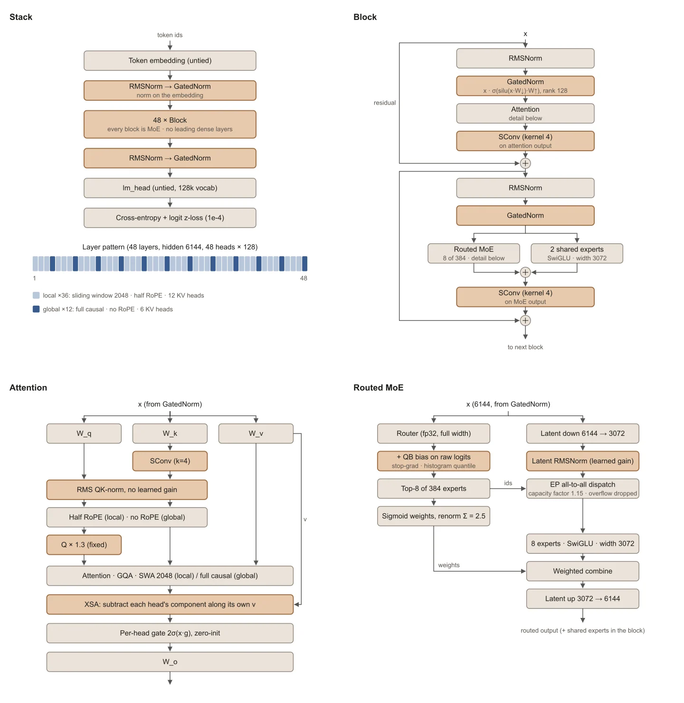
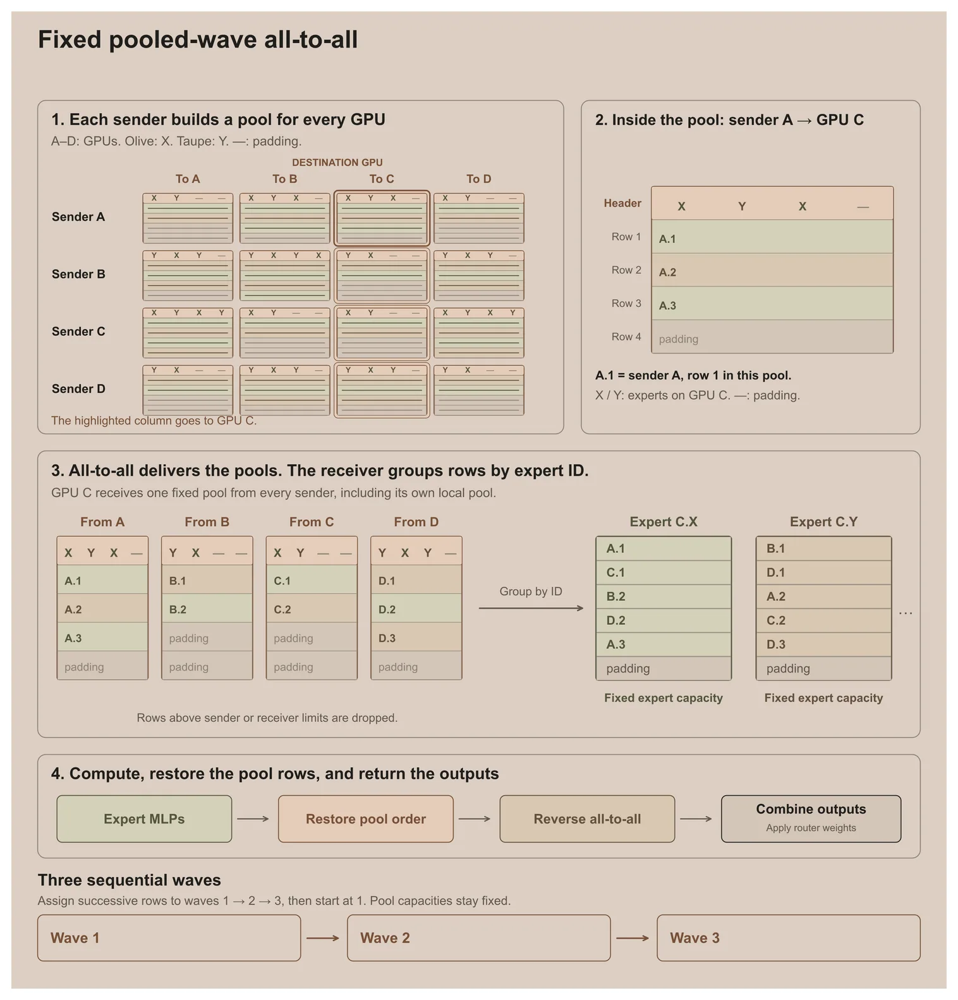
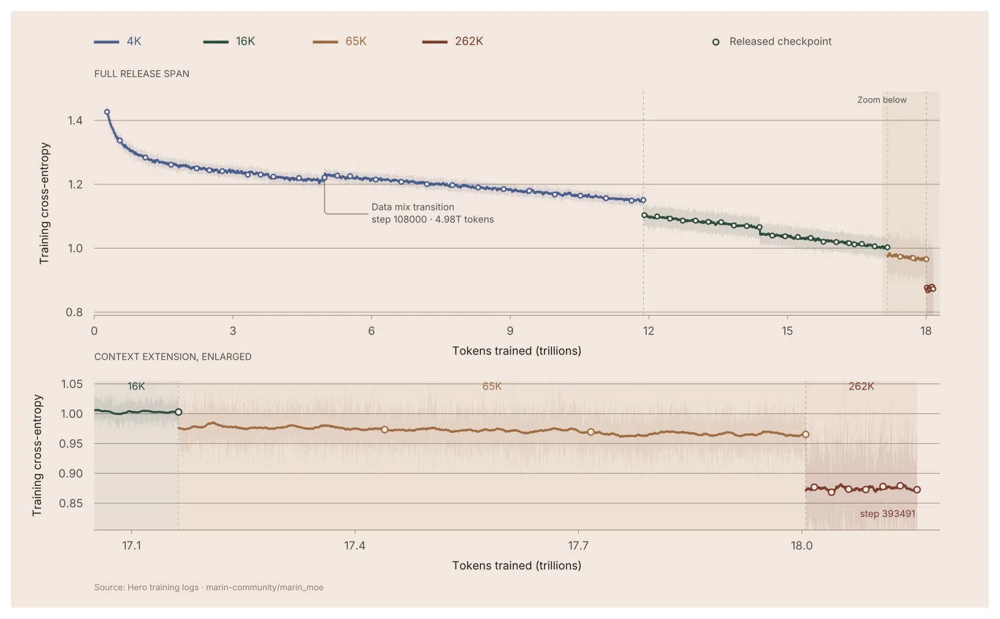
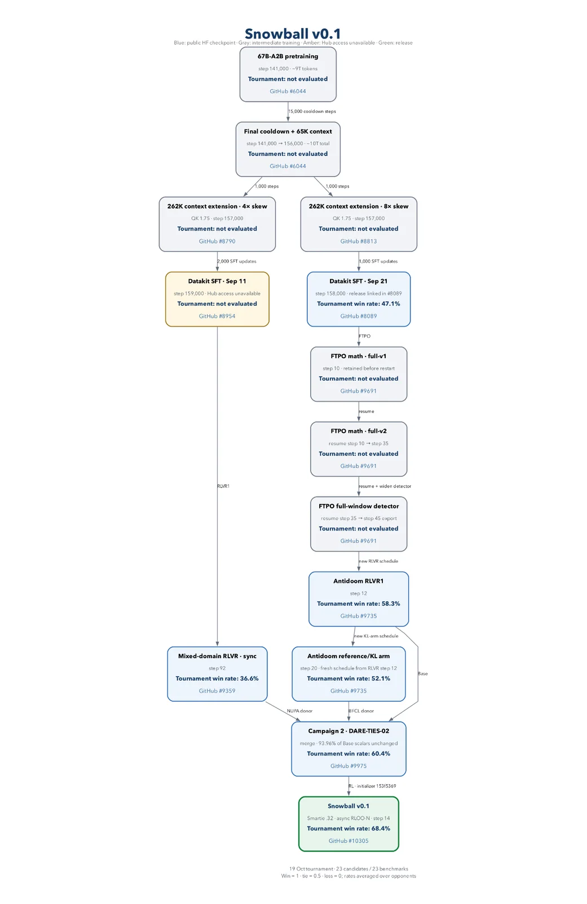
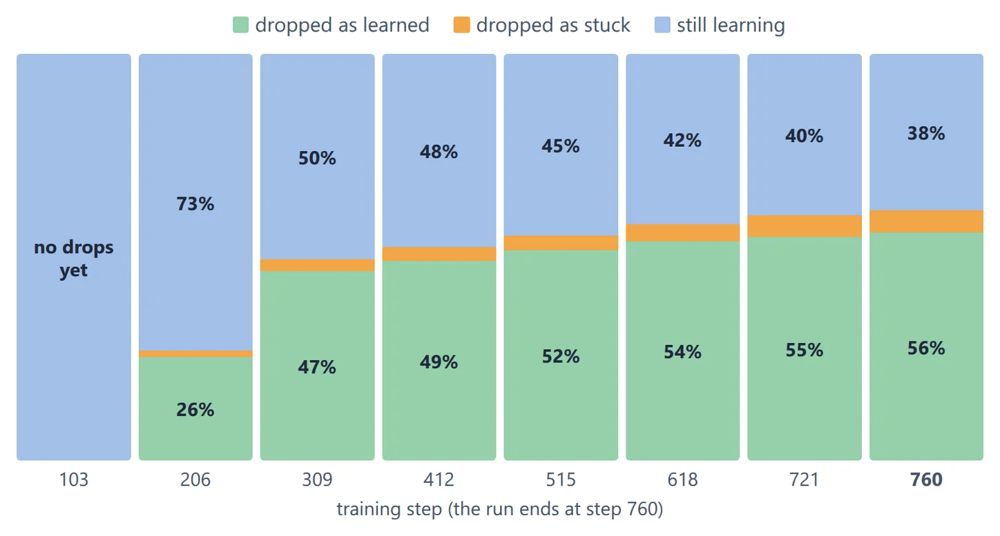

最近花时间把 Stanford / Open Athena 的 Marin 全栈资料系统整理了一遍，主要串了官方的 Mochi 535B 架构长文、Datakit 25T 数据管线、Delphi 与五阶 Scaling Ladder 博客、GB200 EP 工程复盘、Snowball 67B 后训练记录与模型卡，以及对应的开源代码[1][4][38]。相比只公开权重的模型发布，Marin 最值得细读的地方在于把整个过程摊开了：25T 语料怎么做跨源去重和配比、缩放律怎么在开机前定好超参、万步以后遇到过哪些数值故障、后训练里哪些方法有效而哪些翻了车，都有一手记录可查。
这篇笔记按工程推进的顺序，围绕 Marin 的两个核心稀疏 MoE 模型展开：
- Marin “Mochi” 535B-A23B：535.3B 总参数、22.8B 非 embedding 激活参数的 Normalized LatentMoE。在 704 张 NVIDIA GB200（11 组健康 NVL72 机柜）上于 2026 年 11 月 5 日跑完 18T tokens 主预训练[1][2]，并开放了 57 个预训练与 262K 长上下文 checkpoint[5]。
- Marin “Snowball” 67B-A2B：在 TPU 上用 10T tokens 过训约 100× 的 MoE 模型，以少 10× 算力和 16× 激活参数超过早期 Marin 32B[8]，后来成了验证 General SFT、Math / Broad-Domain RLVR、FTPO、Model Merging 和 Coding Agent RL 的主力实验床[11][12][49]。
阅读路线：第 1 章对齐后面会反复用到的参数量/FLOP 核算、GQA vs. MLA、Hyperball、Quantile Balancing 与 5D 并行基础；第 2–6 章结合 Marin 开源主线实现[17][20]，梳理 Mochi 架构消融、Datakit 25T 数据治理、Scaling Law 与五阶 Scaling Ladder（见第 4 章）、GB200 系统工程与 262K 扩窗；第 7–9 章看 Snowball 全链路后训练（09-21 General SFT、Datakit Harmony 管线、Relay/Plateau SFT、Math 与 Broad-Domain RLVR、FTPO、Campaign2 融合、Smartie RL、Coding GRPO、Mochi 迁移边界）和 26 项基准 Eval Policy[16]。
为什么需要 Marin
做机器学习研究通常靠“观察失误—提出假设—设计改动—重新验证”的闭环[4]。但闭源模型只给 API，多数开源权重也只放结果不放过程，社区很难分清是数据配方、优化器还是某个实现细节在起作用。Marin 和 Open Athena 的目标，就是把大规模训练从数据、预注册预测到中间失败记录全部公开，补回这一层可验证的因果链条。
从 2024 年 1 名全职人手起步，团队大致走过了四步才攒出做 535B 模型的把握[4][37][38]：
- 从 “Tootsie” 稠密试错到 Open Athena：最初靠 Google TPU Research Cloud 免费算力以渐进续训练出 Marin 8B，在 16/19 项基准上接近 Llama 3.1 8B；之后在可抢占 TPU 上硬拉通 Marin 32B，引入 QK-Norm 压住训练尖刺并清掉 Dolmino 里的 GSM8K 污染[10]。并入 Open Athena 后扩到 10 名全职工程师，Russell Power 写了多区域调度器 Iris，把硬件故障恢复从约 1 小时缩到几分钟。
- Delphi 与 MoE V1（6.7× 理论 / 3.6× 实测提速）：团队先通过 Delphi 验证稠密 Scaling Law 可以在 $300\times$ 跨度内以 0.2% 误差外推，随后在 TPU v4 上用 Marin MoE V1（129B-A16B，1T tokens，$10^{23}$ FLOPs）配合 Quantile Balancing、AdamH、GatedNorm 和 XSA，跑出 2.234 的 Paloma loss，比预注册预测的 2.252 还低 0.8%。
- Hero 之前的四项改进叠加（再省 2.1× 理论算力）：在 MoE V1 基础上经过四档算力的严格消融（推导见第 4.2 节）[37]，依次加上 64 到 256 细粒度专家（1.4× 理论 / 1.3× 实测）、MuonH（1.3× / 1.25×）、Partial Key Offset 配 50% Partial RoPE（1.2× / 1.2×）以及社区成员 Elie Bakouch 建议的 2.5 Sigmoid 重归一（1.04×），同时把 IsoFLOP 最优点推向“更少激活参数、更多训练 token”。
- 7 月集群倒计时下的三条原则与 Marin Belay：拿到 Jen-Hsun & Lori Huang Foundation 资助的 768 张 GB200 和 12 月交付窗口后，团队定下三条优先级[2]：实测 MFU 优先、预注册 Scaling 曲线并用 W&B 实时公开追踪[1]、保留利于后训练的诱导偏置（包括 5% 终点学习率）。同时引入 Marin Belay，让 Agent 自动把社区在 GitHub Issue 里的点子实现出来，送上缩放梯子实测。

算力、路由与并行基础
在看具体架构和训练代码之前，先把后面会反复用到的四块基础推导对齐：参数与 FLOPs 核算、注意力与归一化、MoE 路由数学以及 5D 并行原语[27][28][33][34]。
参数量与 FLOPs 核算
Marin 的 JAX 代码里把激活张量按行向量排成 $X \in \mathbb{R}^{B \times S \times D}$，其中 $B$ 是全局序列批大小，$S$ 是序列长度（启动期 4,096），$D$ 是隐藏维度（比如 d6144 代表 $D=6144$）。Attention 的 Q 头数为 $H_q$、KV 头数为 $H_{kv}$、单头宽度固定 $d_h=128$，整个缩放梯子始终保持 $D = H_q d_h$。
对固定计算部分参数 $N_{\text{fix}}$（Attention、Router、Shared Experts、Norm）、$E$ 个规模均为 $P_e$ 的 Routed Experts 及每 token 选 $K$ 个专家的 MoE 层，总参数与激活参数按如下公式核算[18]：
$$N_{\text{total}} = N_{\text{fix}} + E P_e, \qquad N_{\text{active}} \approx N_{\text{fix}} + K P_e$$这里不能直接用 $N_{\text{total}} \times K/E$ 估算激活规模——例如 $N_{\text{fix}}=200\text{M}$、$E=8$、$K=2$、$P_e=100\text{M}$ 时，总参数 1B 而实际激活是 400M（不是 250M）。按 Mochi 48 层和 $V = 128{,}256$ 非共享词表头逐层累加，非 embedding 参数总量为 533.8B（含头尾 535.3B），激活非 embedding 参数为 22.8B（含头尾 24.4B）。
常规稠密 Transformer 单次训练迭代的计算量（前向加约 $2\times$ 反向，合计 $3\times$）可展开为[34]：
$$F_{\text{iter}}^{\text{dense}} = 72 B L S D^2 \left(1 + \frac{S}{6D} + \frac{V}{12 D L}\right) = \underbrace{72 B L S D^2}_{\text{线性层与 MLP}} + \underbrace{12 B L S^2 D}_{\text{Attention}} + \underbrace{6 B S D V}_{\text{lm\_head}}$$引入 LatentMoE 后，Levanter 默认算力估算仍按主干宽度 $D$ 计算 Routed Experts。实际上每个压缩至 $d_l$ 维的 SwiGLU 专家前向只耗 $6 d_l d_{\text{ff}}$ FLOPs，外加一次下/上投影 $4 D d_l$ FLOPs（因为合并后只升维一次）。Marin 团队在实现时对每层施加了精确修正，再按 $F_{\text{example}} = 3 S \cdot F_{\text{fwd/tok}}$ 折算 MFU，以免因漏算减半维度而把 MFU 高估近一倍[25][27]：
$$\Delta F_{\text{layer}}^{\text{latent}} = 2 \cdot 3 \, d_{\text{ff}} \, K (d_l - D) + 4 D d_l, \qquad \text{MFU} = \frac{F_{\text{train/token}} \times \text{tokens/sec}}{N_{\text{GPU}} \times P_{\text{peak/GPU}}}$$注意力、位置编码与归一化
推理期按元素字节宽 $b_{\text{elem}}$ 缓存长度 $S$ 的 KV 序列时，每层显存占用直接取决于 KV 头数 $H_{kv}$。Grouped Query Attention（GQA）通过分组映射 $g(h)$ 让每组 $H_q / H_{kv}$ 个查询头共享同一组 KV：
$$\begin{aligned} \mathrm{KV}_{\text{bytes}}^{\text{GQA}} &= 2 S H_{kv} d_h b_{\text{elem}}, \qquad g(h) = \left\lfloor \frac{h}{H_q / H_{kv}} \right\rfloor \\ o_t^{(h)} &= \sum_{j \le t} \operatorname{softmax}_j\!\left(\frac{q_t^{(h)} \bigl(k_j^{(g(h))}\bigr)^\top}{\sqrt{d_h}}\right) v_j^{(g(h))} \end{aligned}$$在 Mochi（$H_q = 48$、$d_h = 128$、BF16 下 $b_{\text{elem}} = 2\text{ B}$）中，全量 MHA（$H_{kv}=48$）每 token 每层需 $24\text{ KiB}$；局部 4:1 GQA（$H_{kv}=12$）将缓存降到 $6\text{ KiB/tok/层}$，全局 8:1 GQA（$H_{kv}=6$）再降到 $3\text{ KiB/tok/层}$。
作为对比，DeepSeek 的 Multi-head Latent Attention（MLA）先将隐状态压缩为共享低秩 KV 潜向量 $c_t^{KV} \in \mathbb{R}^{d_c}$ 与解耦旋转键 $k_t^R = \operatorname{RoPE}(x_t W_{KR}) \in \mathbb{R}^{d_h^R}$，再通过升维矩阵重构 $k_t^C, v_t^C$，解码时把 $W_{UK}^\top$ 吸收进查询投影，缓存只需要存 $(c_t^{KV}, k_t^R)$：
$$\begin{aligned} c_t^{KV} &= x_t W_{\text{DKV}} \in \mathbb{R}^{d_c}, \qquad k_t^C = c_t^{KV} W_{UK},\qquad v_t^C = c_t^{KV} W_{UV} \\ q_t^C (k_j^C)^\top &= \bigl(q_t^C W_{UK}^\top\bigr)\bigl(c_j^{KV}\bigr)^\top, \qquad \mathrm{KV}_{\text{bytes}}^{\text{MLA}} = S (d_c + d_h^R) b_{\text{elem}} \end{aligned}$$Mochi 选择把 Attention 保持在内核更简单、与 FlashAttention-4 更贴合的 GQA，而把潜空间压缩专门用在 384 专家 MoE 这条通信瓶颈路径上。
RoPE、Partial RoPE 与 NoPE：旋转位置编码以底数 $b$ 和几何频率 $\omega_j$ 旋转每对二维坐标 $(2j, 2j+1)$；利用二维旋转矩阵的正交性，位置 $p, t$ 的内积只依赖相对位移 $t-p$。Partial RoPE 只对前 $d_r$ 维施加旋转、其余维度保留静态 NoPE：
$$\begin{aligned} R(\theta) &= \begin{pmatrix} \cos\theta & -\sin\theta \\ \sin\theta & \cos\theta \end{pmatrix}, \qquad \omega_j = b^{-2j/d_r}\ \ \bigl(j = 0,\dots,\tfrac{d_r}{2}-1\bigr) \\ \bigl(R(p\omega_j)\,q_{p,j}\bigr)^\top \bigl(R(t\omega_j)\,k_{t,j}\bigr) &= q_{p,j}^\top R(p\omega_j)^\top R(t\omega_j)\,k_{t,j} = q_{p,j}^\top R\bigl((t-p)\omega_j\bigr)\,k_{t,j} \\ \tilde{q}_p &= \Bigl[\underbrace{\operatorname{RoPE}_{p}(q_{p,\,1:d_r})}_{d_r = d_h/2},\;\underbrace{q_{p,\,d_r+1:d_h}}_{\text{NoPE}}\Bigr] \end{aligned}$$Mochi 在局部 SWA 层使用 50% Partial RoPE（$d_r = 64, d_h = 128$），给归纳匹配留出静态维度；而在全部 12 个全局注意力层完全去掉位置旋转，采用 NoPE（$d_r = 0$）。
LeRoPE vs. YaRN 频率插值与温度外推：将上下文扩展倍率为 $s = L_{\text{new}} / L_{\text{old}}$ 时，LeRoPE 让各频段乘子随可学习的 $\alpha_j$ 变化；YaRN 则按原窗内的旋转圈数 $r_j$ 分段处理——高频（$r_j \ge \beta$）保持不变，低频（$r_j \le \alpha$）按 $1/s$ 线性拉伸，中间带通过斜坡函数 $\gamma_j$ 平滑过渡（通常取 $\alpha=1,\beta=32$），并用幅度因子 $m(s)^2$ 放大 logits，防止长窗注意力过度分散：
$$\begin{aligned} \text{LeRoPE:}\quad \tilde{\omega}_j &= e^{\alpha_j}\omega_j \quad (\alpha_j\text{ learnable}) \\ \text{YaRN:}\quad r_j &= \frac{L_{\text{old}}\,\omega_j}{2\pi}, \qquad \gamma_j = \operatorname{clip}\!\left(\frac{r_j - \alpha}{\beta - \alpha},\, 0,\, 1\right), \qquad \tilde{\omega}_j = (1 - \gamma_j)\frac{\omega_j}{s} + \gamma_j \omega_j \\ \text{Logits:}\quad \ell_{p,t} &= \frac{m(s)^2}{\sqrt{d_h}}\,\tilde{q}_p^\top \tilde{k}_t, \qquad m(s) = 1 + 0.1\ln s, \qquad s = \frac{L_{\text{new}}}{L_{\text{old}}} \end{aligned}$$因为全局层使用的是 NoPE，Mochi 后面从 65K 扩到 262K 时（见第 6.2 节），只需套用类似的 $m(s)^2$ 温度缩放，不用改写旋转波长。
QK-Norm 角度界、Rank-128 GatedNorm 与 Logit $z$-Loss：无参数 RMSNorm 将注意力头的 $L_2$ 范数固定在 $\|\hat{q}_p\|_2 = \|\hat{k}_t\|_2 = \sqrt{d_h}$，乘以常数 $c$ 后，注意力打分变成纯粹的角度余弦度量（4K 起步时 $c=1.3, d_h=128 \Rightarrow c\sqrt{d_h} \approx 14.71$）：
为了在定范数约束下保留逐维输入门控，并防止输出 logits 的对数配分函数漂移，Mochi 在残差支路加上 rank-128 的 GatedNorm（$W_{\text{down}} \in \mathbb{R}^{D\times 128}, W_{\text{up}} \in \mathbb{R}^{128\times D}$），在输出端保留二次 logit $z$-loss：
$$\begin{aligned} \operatorname{GatedNorm}(x) &= u \odot \sigma\!\bigl(\operatorname{SiLU}(u W_{\text{down}})\,W_{\text{up}}\bigr), \qquad u = \operatorname{RMSNorm}(x) \odot g \\ \mathcal{L}_z &= \lambda_z \cdot \frac{1}{BS}\sum_{t=1}^{BS} \left(\log \sum_{v=1}^{V} e^{z_{t,v}}\right)^2 \qquad (\lambda_z = 10^{-4}) \end{aligned}$$需要注意，前向激活 Norm 和优化器 Hyperball（MuonH / AdamH）管的是两件事：前者缩放前向激活，后者在每步更新后把权重矩阵投回初始 Frobenius 范数球面 $R = \|W\|_F$：
$$\widetilde{W} = W - \eta R \frac{U}{\|U\|_F}, \qquad W_{\text{next}} = R \frac{\widetilde{W}}{\|\widetilde{W}\|_F}$$| 稳定化机制 | 执行阶段 | 直接约束对象 | 协同边界说明 |
|---|---|---|---|
| MuonH / AdamH | Optimizer Step | 权重块范数 $R = \|W\|_F$ 与相对转角 | 消除了权重增长带来的隐式 LR 衰减，故宜配线性衰减 |
| QK RMSNorm | Attention 前向（Q, K） | Q/K 向量范数与打分倍率（1.3） | 可与 Hyperball 并用，扩窗时便于手动阶梯拉高倍率 |
| Latent RMSNorm | x W_down 之后 | 压缩路由潜变量激活尺度 | 可学习 gain 修复双层小初始化造成的 $0.25\times$ 萎缩 |
| GatedNorm + z-loss | Block / 词表输出端 | 逐通道输入门控与输出 logits 尺度 | $10^{-4}(\log\sum_v e^{z_{t,v}})^2$ 防止末层可学习 RMSNorm gain 失控 |
MoE 路由与 Quantile Balancing
按照苏剑林的几何视角[28]，Dense FFN 可以看成单位方向向量与模长的求和 $\sum_{i=1}^E \rho_i e_i$，稀疏 MoE 则是先用轻量 Router 预测各个 $\rho_i$，再只计算 top-$K$ 个专家。如果缺少均衡约束，选得少的专家梯度更少，很快就会掉进“越弱越不被选”的退化循环[7]。
相比 GShard 的辅助损失 $\alpha\mathcal{L}_{\text{bal}}$（会和主任务交叉熵互相干扰）、DeepSeek Aux-Loss-Free（在更新模型权重之后按固定步长 $\gamma=0.001$ 迭代偏置 $b_i \leftarrow b_i + \gamma\operatorname{sign}(\bar{c}-c_i)$）以及带偏置动量的 Arcee SMEBU，路由偏置还有两个基本性质：给 $b$ 加上常数向量 $c\mathbf{1}$ 不会改变 $\operatorname{argtop}_K(s+b)$，说明 $(b-\bar{b}\mathbf{1})$ 负责专家间均衡，均值 $\bar{b}\mathbf{1}$ 决定平均激活配额；同时把选路用的加偏置分数和输出乘回的原始门控激活（Gate 与 Bias 解耦）分开，超参就能跨激活函数复用。
苏剑林进一步把全局批次 $M$ 个 token 与 $E$ 个专家之间的分配写成线性规划[29][30]，从对偶乘子 $\alpha_t, \beta_i$ 导出无超参的 Quantile Balancing (QB)：
$$\max_{x_{t,i} \in [0,1]} \sum_{t=1}^M \sum_{i=1}^E x_{t,i} s_{t,i} \qquad \text{s.t.} \quad \sum_{i=1}^E x_{t,i} = K,\quad \sum_{t=1}^M x_{t,i} = \frac{MK}{E}$$- Token 侧临界值：在含偏置打分 $s_t + b^{(t)}$ 上读取第 $(K+1)$ 大值 $\alpha_t = (s_t + b^{(t)})_{(K+1)}$，算出边界差矩阵 $m_{t,i} = s_{t,i} - \alpha_t$。
- 专家侧分位数：取各专家 $m_{t,i}$ 的 $(1 - K/E)$ 上分位数 $\beta_i = Q_{1 - K/E}(\{s_{t,i} - \alpha_t\}_{t=1}^M)$，令 $b^{(t+1)} = -\beta$（
stop_gradient）。
Open Athena 先在 32B-A5B / 326B tokens（$10^{22}$ FLOPs，32 层 × 64 专家 top-4）上验证了 QB：无需前置稠密层也没出现 loss 尖刺，消除了早先 $10^{21}$ 固定步长方案前 5,000 步的路由震荡与持续 50 多步的专家失活（Layer 1 路由余弦相似度在前 4,000 步短暂聚拢后到 60,000 步清楚拉开）[7]。再加上处理长尾共性知识的共享专家、适度细粒度切分，以及面向单请求生成的 Moving Quantile Balancing (MQB)[31] 和非竞争 Sigmoid 门控[32]，整套 MoE 路由就配齐了。
5D 分布式并行原语
在 BF16 计算加 FP32 主权重/动量下（$16\text{ B/param}$），535B 模型光静态状态就需要约 $8\text{ TiB}$，远超单张 B200 的 $185\text{ GiB}$ HBM[6]。五大并行轴各有分工[33]：
| 并行轴 | 切分对象 | 核心集合通信 | Marin / GB200 部署角色 |
|---|---|---|---|
| DP | 全局 batch / 序列 | All-Reduce / Reduce-Scatter | DP=11 经 50 GB/s InfiniBand 复制 11 组完整机柜单元 |
| FSDP | 权重、梯度与优化器状态 | All-Gather + Reduce-Scatter | 机柜内分片 Attention、Shared Experts 及非路由权重 |
| TP (+ SP) | 矩阵维度与序列 Norm 激活 | All-Reduce / All-Gather | 注：Megatron SP 与 TP 共组（$N_{\text{GPU}} = N_{\text{DP}} N_{\text{TP}} N_{\text{PP}}$，区别于 CP） |
| PP | Transformer 层间切分 | 点对点 Send/Recv | 机柜内 HBM + Host Offload + lax.scan 足够，Mochi 免除 PP 气泡 |
| EP | MoE Routed Experts | All-to-All Dispatch/Combine | EP=64 独享机柜内 900 GB/s NVLink（每卡 6 专家） |
为什么超出 360B 就得放弃纯 FSDP 改上 EP？Mochi 大约 $97\%$ 的参数都在路由专家里。以单机柜 1,024 条 4K 序列、64 卡（top-8 LatentMoE $d_l=3072$）来算，每层前向 FSDP 要 All-Gather 约 $20\text{ GiB/GPU}$ 权重，而 EP 只收发约 $6\text{ GiB/GPU}$ 压缩 token；而且专家数越堆越多时，FSDP 通信量会线性上涨，EP 的 token 通信量基本不变。
Mochi 535B 架构设计
在 Mochi 上，每个新增模块都必须同时过两关：相对于 2026 年 5 月基线定律 $L(C) = 1.6 + 88.90 \cdot C^{-0.0941}$ 的等效算力效率，以及 GB200 上的实测 MFU[2]。
模型定型与浅宽同构骨干
535B 并不是一开始就定下的尺寸，而是在六个硬约束下反复权衡出来的结果[2]：集群共有 768 张 GB200，12 月交付窗口留给联调约 25 天、主训练约 80 天和 15 天缓冲；64 卡 NVL72 单机柜总 HBM 是 11.6 TiB；数据池去重后有 23.11T tokens；并且还得为 12 月的后训练留出 2–3 周算力和可行的推理 rollout 速度。最终团队选择比 60:1 计算最优点过训约 13×（从 1.4T 拉到 18T），用约 2× 的 FLOP 折扣换一个更强的推理基座。
| 候选方案 | 并行与注意力 | 20T 预计工期 | 取舍结论 |
|---|---|---|---|
| 129B-A15B MoE | 单柜 FSDP | 57 天 | 容量偏小，吃不满 80 天训练窗口 |
| 360B-A23B MoE | 单柜 FSDP + GQA | 82 天 | 单柜纯 FSDP 极限规格，曾是保底方案 |
| 707B-A23B / 360B-A21B MLA | 跨两柜 FSDP / 单柜 MLA | 99 天 / 120 天 | 跨柜 IB 降速或 MLA 吞吐超出工期 |
| 535B-A23B Mochi | DP11 × EP64 + LatentMoE (8/384) | 85 天（18T 11 月 5 日完赛） | EP 突破单柜 FSDP 上限，综合算力效率提升 1.3× |
主干最后定为 48 层 × $D=6144$（宽深比 128），并且没有放前置 Dense 层[17]。全层结构完全一致，单个 jax.lax.scan 循环就能编译全部 48 层，显存也更好控。至于 Attention Residuals、mHC、MLA、Multi-Token Prediction、Looped Depth[35][36] 和 n-gram embedding 这些机制，7 月开机前要么没过 MFU 门槛，要么后面可以用独立草稿模型替代，所以这一轮都先放下了。

K/attn_out/mlp_out）、固定 1.3 QK-Norm、XSA、Normalized LatentMoE 与 Raw-Logits Histogram QB。来源：Larry Dial, Open Athena (2026) [2]。| 核心超参 | Marin 535B-A23B（Mochi） | Marin Snowball 67B-A2B | Marin 32B（Phase 3+ 稠密） |
|---|---|---|---|
| 总参数 / 激活参数 | 535.3B / 22.8B（非 embed 激活） | 67B / ~2B active | 32B Dense |
| 深度 × 宽度（$L \times D$） | 48 层 × 6,144（ratio 128），init $0.5/\sqrt{D}$ | 面向 TPU 的细粒度深度 MoE | 64 层 × 5,120（$d_{\text{ff}}=27648$） |
| MoE 与共享专家 | 8 / 384 LatentMoE ($d_l=3072$) + 2 共享 | 高稀疏 TPU MoE | 稠密 SwiGLU |
| Attention 与 KV 布局 | 3:1 SWA (2048) / Global；48Q；12/6 KV | 低 KV 占用以加速 RL Rollout | 全因果 40Q / 8KV GQA |
| 位置编码与稳定器 | 50% RoPE / NoPE；1.3 QK-Norm；XSA；SConv | Partial RoPE + QK-Norm；扩窗 262K | RoPE + Qwen3 QK-Norm |
| 预训练规模与硬件 | 18T tokens（704 GB200s） | 10T tokens（TPU v4/v5p） | 6.437T tokens（Mantis） |
Normalized LatentMoE
Mochi 的 FP32 Router 仍然直接读全宽 $D=6144$ 的隐状态，2 个全宽共享专家也留在本地提供兜底容量（占激活 MLP 神经元的 $1/3$）。只有路由分支先降维并归一化，再做跨卡派发，聚合之后再统一升回全宽：
$$z = \operatorname{RMSNorm}_{\gamma}\!\left(x W_{\text{down}}\right), \qquad y_{\text{routed}} = \left(\sum_{e \in \mathcal{K}_{\text{kept}}} g_e E_e(z)\right) W_{\text{up}}$$由于瓶颈维 $d_l = 3072$ 和专家中间维 $d_{\text{ff}} = 3072$ 相等，384 个专家里的三块 SwiGLU 矩阵正好都是 $3072 \times 3072$ 方阵。方阵让 Muon 的正交化在输入和输出维度上作用均匀，不需要像长方阵那样再加 NorMuon 或 Aurora 的专门补丁。
不过，最初不带归一化的 LatentMoE 在 d512–d1024 消融里只跑出 0.74–0.75× 效率。原因很快查清：$W_{\text{down}}$ 和 $W_{\text{up}}$ 都按 $0.5/\sqrt{D}$ 初始化，两次投影叠加会带来 $0.5 \times 0.5 = 0.25$ 的激活尺度萎缩，实验中潜空间上的自由标量一路升到约 4（首层约 3.1–3.2）来补偿它。在瓶颈处加上可学习的 RMSNorm(3072) 后，算力效率回到 1.25×，All-to-All 通信量减半，让 8/384 只花 4/192 的通信代价就拿到了更细粒度的质量收益：
| 路由专家粒度 | 单专家宽（d768） | Paloma Loss（d768） | Paloma Loss（d1024） | 等效算力效率 |
|---|---|---|---|---|
| 4 / 192 | 768 | 3.0289 | 2.7810 | 1.00× 基线 |
| 8 / 384（Hero） | 384（与 $d_l$ 等宽方阵） | 3.0091 | 2.7674 | 1.16×（d768）/ 1.13×（d1024） |
| 16 / 768 | 192 | 3.0009 | 未跑 | 1.23×（吞吐收益递减） |

直方图 QB 与 Sigmoid 门控
为了避免跨卡张量切分干扰分位数估算，Mochi 没有沿用每卡求 top_k 平均的做法，而是实现了一个与 GPU 数量解耦的 10,000 分箱实时全局直方图（QbEstimator.HIST）[2][20]：
- 在 Raw Logits 上维护偏置：DeepSeek-V3 和 Kimi K3 在 Sigmoid 后的 $[0, 1]$ 区间里统计直方图；Mochi 直接在原始 FP32 logits 上更新偏置，
d768下收敛更快，丢包降到约 2.0%，路由熵达到 4.848（接近满熵 $\ln 128 = 4.852$），优于 Post-Sigmoid 的 3.4%–4.9% 丢包与 4.786–4.821 熵值。 - 单次整数
psum估算：每步先用pmin/pmax定出动态边界，再用jnp.bincount(10000)计数并做一次整数全局归约，最后线性插值读出上分位数 $\beta_e$，实测对 MFU 几乎没影响。 - 无偏置 2.5 Sigmoid 权重：经 $s+b$ 选出 top-8 后，组合权重按不带 bias 的原始分数 $g_e = \frac{2.5\,\sigma(s_e)}{\epsilon + \sum_{k \in \mathcal{K}} \sigma(s_k)}$ 计算。团队也指出，数据配比切换时 QB 用 1–2 步快切是否过于剧烈，以及前两层路由专家梯度偏小的问题，仍值得后续继续查[2]。
混合注意力、XSA 与 SConv
剩下的几个微结构设计主要针对长窗显存、早训丢包和浅网特征混合做权衡，详细消融数据整理在图 4 与下表里[2]：
- 非对称 GQA 配 2048 SWA：每 4 层加末层采用 8:1 GQA 全局层（6 个 KV 头）和 NoPE；其余 36 层用 2,048 窗口局部注意力配 4:1 GQA（12 个 KV 头）。2048 窗口在 vLLM 里比 512 仅慢 2%–4%，算力效率却高 1.10×；若完全取消 GQA 改回 MHA 虽然还能再快 1.18×，但长上下文 KV 显存代价过高。
- 固定 1.3 QK RMSNorm：固定倍率在
d768上稳优于无 QK-Norm，在d2048上与会自动长到约 2.0 的可学习缩放基本打平，但固定系数能给后续扩窗留下清晰可控的升温入口。 - XSA 加头门控把早训丢包率降了一半：Hyperball 不允许对 $W_o$ 做零初始化，所以不能直接搬 MAI-Thinking-1 的写法。团队改用 XSA 减去输出在自身 value 上的投影，再接零初始化的
2*sigmoid头门控（初值正好是 1.0），在d6144百步预热测试里把前期平均 drop rate 从 12.7% 降到了 5.6%。 - GatedNorm 与 Embedding RMSNorm：rank-128 GatedNorm 放进 MuonH 更新，比留在 Adam 里略好一些；
token_embed则放在 Hyperball 外的 Plain Adam 中（范数从 177 长到 7,800 形成自然衰减），再在出口接一层RMSNorm，贡献了约 19% 的算力效率提升。 - 4 阶因果 SConv（特意跳过 V）：跨文档边界掩码的短卷积源自 Inkling[36]，只在
K、attn_out和mlp_out三处启用，故意不对V做卷积，免得混入邻近 token 的 value 干扰 XSA 的自投影消除；实验也证实 PKO 初始化虽然前 150 步有微弱领先，但到终点反而稍逊一筹，因此保持恒等初始化。

d6144 前 100 步的 EP 丢包率降了一半；下：d2048 上可学习 QK 缩放升到约 2.0，终点表现（2.6484）仍略落后于固定 1.3（2.6477）。来源：Larry Dial, Open Athena (2026) [2]。SConv 消融（d1024）与 QK-Norm 对照（d768） | Paloma Loss | 等效算力效率 | 架构取舍说明 |
|---|---|---|---|
| SConv：K, V, attn_out, mlp_out（k=4） | 3.0378 | 1.19× | Hero 保留 K / attn_out / mlp_out，摘除 V 保护 XSA |
| SConv：四处全开（k=3 / k=2 / 仅全局层） | 3.0387 / 3.0440 / 3.0482 | 1.18× / 1.13× / 1.10× | 减小窗长或只覆 1/4 层数均削弱归纳头收益 |
| SConv：单开 mlp / K / attn / V / 全关 | 3.0506..3.0610 | 1.08×..1.00× | 前三个位置的增益可以稳定叠加 |
QK-Norm（d768）：固定 1.3 / 可学习 / 无倍率 / 无 | 3.0208 / 3.0217 / 3.0261 / 3.0281 | 基准对照 | 固定 1.3 兼顾稳定性与可预期的扩窗接口 |
JAX / Equinox 核心实现
下面这段代码把 Marin 开源前向实现的关键逻辑浓缩在了一起[20]，方便直接对照 XSA、头门控、10,000 分箱直方图 QB 和 Normalized LatentMoE 瓶颈的数据流：
# 节选自 experiments/grug/moe_hero_ep/model.py (commit 12d8b6f09f96)
def xsa_and_head_gate(attn_out, v, x, attn_gate, w_o, batch_spec):
aligned_v = reshard(align_kv_heads(v, num_q_heads=attn_out.shape[2]), _partition_spec_of(attn_out))
dot = jnp.sum(attn_out * aligned_v, axis=-1, keepdims=True)
v_norm_sq = jnp.sum(aligned_v * aligned_v, axis=-1, keepdims=True)
# XSA：逐头剔除输出在自身 value 方向上的投影分量
attn_out = attn_out - (dot / (v_norm_sq + 1e-6)) * aligned_v
gate = 2.0 * jax.nn.sigmoid(jnp.einsum("bsd,dn->bsn", x, attn_gate))[..., None]
attn_out = jnp.reshape(gate * attn_out, (*attn_out.shape[:-2], -1), out_sharding=P(_BATCH_AXES, None, "model"))
return jnp.einsum("bsh,hd->bsd", attn_out, w_o, out_sharding=batch_spec)
def moe_forward_latent_qb(self, x_flat):
# 1. FP32 Router 读取全宽 D=6144；QB bias 仅作用在带 stop_gradient 的选路 logits 上
logits = jnp.einsum("td,de->te", x_flat, reshard(self.router, P(None, None))).astype(jnp.float32)
biased = logits + jax.lax.stop_gradient(self.router_bias)
topk_biased, idx_plus_1 = jax.lax.top_k(biased, self.cfg.num_experts_per_token + 1)
qb_alpha, selected = topk_biased[:, -1:], idx_plus_1[:, :-1]
# 2. 用无偏置 logits 算 Sigmoid 并归一化到 2.5
raw_weights = jax.nn.sigmoid(jnp.take_along_axis(logits, selected, axis=-1))
weights = (raw_weights * (2.5 / (jnp.sum(raw_weights, axis=-1, keepdims=True) + 1e-9))).astype(x_flat.dtype)
# 3. 跨卡 10,000 分箱实时直方图计算 (1 - K/E) 上分位数 beta
beta, lo, hi = _qb_beta_hist(reshard(logits - qb_alpha, P(_BATCH_AXES, None)), mesh=get_abstract_mesh(),
num_experts_per_token=8, num_experts=384, n_bins=10_000)
# 4. Normalized LatentMoE：6144 -> 3072 -> 可学习 RMSNorm -> EP64 -> 3072 -> 6144
routed_in = self.latent_norm(jnp.einsum("td,dl->tl", x_flat, self.w_latent_down.astype(x_flat.dtype)))
routed_latent, overflow = self.expert_mlp(routed_in, selected.astype(jnp.int32), weights, report_capacity_overflow=True)
routed_out = jnp.einsum("tl,ld->td", routed_latent, self.w_latent_up.astype(x_flat.dtype))
return routed_out, {"qb_beta": beta, "overflow": overflow.total}Datakit 25T 数据管线
模型结构确定后，接下来看喂进去的数据。开源社区已经攒下了几十万亿 token 的语料，但跨机构抓包重解析与合成改写带来了大量重复，公开数据里也经常混进评测题。Marin 用 Datakit[3] 把 152 份原始数据统一清洗、去重、去污染，再切分成 200 个可以按预算动态调权的配比桶[19]。

语料汇聚、去重与去污染
Datakit 收录了 AI2、NVIDIA、HuggingFace、HPLT 以及学术、代码和 Agent 轨迹在内的 152 个数据源，共 18.71B 原始文档、25.25T Llama-3 tokens（早先规划文档记为 25.6T，其中 142 组轨迹合并记作一组）[3]：
- 标准化与不转存原则：所有记录写入带文本哈希和
source_id的 Parquet，并压缩异常空白字符（他们确实遇到过 99% 由空格构成的网页导致分词器爆内存）。同时仓库只固定上游 commit 而不另存镜像副本，一旦 Stack v3 等数据作者行使下架权，下次重建就能同步去掉。 - 精确哈希加词级 5-Gram LSH 去重：精确哈希先清掉约 5.05 亿条源内和跨源完全重复，再用词级 5-gram（不是 BPE token）做 LSH 近似检索与复核，累计剔除 2.33B 文档（12.5%）和 2.13T tokens（8.4%）。跨源重合的 6.86 亿条链接里，93.2% 集中在三对数据源之间，主要是 Nemotron 合成改写和 Common Crawl 原文的互重。因为单个字符变化会改变 DNA 序列和工具 JSON 的语义，团队对 16 个敏感源豁免了模糊去重，使最终可用池从 23.01T 增加到 23.11T[19]。
- 13 词 Bloom 去污染与公开勘误：只要某段文字有至少 50% 的 13 词窗口命中 Artificial Analysis 或 Marin 评测集，就整篇移出（短段落走精确子串匹配），这一步再滤掉 13.66B tokens。团队也直接披露了两次漏检：Marin 32B 曾因 Dolmino 混入 GSM8K，反而因为提示词格式冲突拉低了新格式测试分[10]；Mochi 在第 362k 步排查出 Penn Treebank 泄漏（占 Paloma 1/16 权重，约拉低 0.02 loss）[5]。
- 合成数据占比与反垃圾评分：整个数据池约有 25% 属于明确标注的 AI 合成数据。考虑到合成文本通常语法工整、传统的拼写错误启发式会失效，Datakit 的分类器重点过滤 SEO 垃圾页和乱码扫描 PDF（并对代码单独设标），而不是一味追求教材体裁。
Harrier 分桶与代理配比
单靠数据源标签没法把网页混杂里的数学、代码和菜谱、广告彻底分开，因此 Datakit 把语义向量抽取和配比搜索解耦成四步：
- 一次性 Harrier 1,024 维表征：用微软开源的检索模型 Harrier（基于 Qwen 微调）为全部文档预先算出 1,024 维向量。
- 40 个等容语义主题：对采样向量做 5,000 簇球面 $k$-means，再层次合并成 40 个各占至少 1% 语料的均匀主题，避免小桶调权不敏感。在 5 选 1 LLM Intruder 测试中，1,000 簇准确率达到 84.4%，40 大类达到 62.5%（随机基线 20%，$p < 0.001$）。
- 5 档质量分型（保留低分桶）：按代码、正文、数学分别训练 FineWeb-Edu 风格的打分器，拼出 40 × 5 = 200 个配比桶。不预先砍掉低分桶，是为了用同一套数据池适应不同预算——小算力多吃高分头部，大算力再用长尾数据稀释重复。
- Simulated Epoching 代理回归：通过
grug-moe-mix-swarm跑了 872 到 1,000+ 组小模型代理实验。当算力不超过 $10^{23}$ FLOPs 时，开启simulated_epoching按激活参数比例同步缩窄每个桶的可用数据量，让小模型真实复现 Mochi 的数据重复遍数（最高 2.09 epochs，远低于 8 epochs 上限），再参考 RegMix 与 Calvin Xu 重复拟合律优化 200 桶权重[19]。
最后定下来的 Harrier 两阶段配比（参考预算为 15T 与 3.75T，按 80% / 20% 映射到 Mochi 的 18T 计划）通过 Feistel 置乱打包成 4,096 长度序列，并用文档边界掩码阻断跨文档注意力和短卷积 SConv。
Scaling Law 推导与缩放梯子
有了架构和 23T 数据池，下一个问题是超参数：704 张 GB200 一跑就是三个月，不能靠猜。Open Athena 把 Scaling 拆成了四层体系[40]：无偏曲面拟合器 VPNLS、可跨尺度迁移的优化器配方 Delphi、联合回归出来的 MoeHeuristic 学习率律，以及只花约 1% 算力就能向前 $300\times$ 外推预测 535B 终点的五阶 Scaling Ladder。
IsoFLOPs、Approach 2 偏差与 VPNLS
从五参数 Chinchilla 损失曲面出发，按前反向算力约束 $C \approx 6 N_{\text{act}} D$ 消去参数量 $N = C/(6D)$，每条等算力（IsoFLOP）切片都可以写成训练 token 数 $D$ 的单变量函数[41]：
$$L(N,D) = E + \frac{A}{N^\alpha} + \frac{B}{D^\beta} \qquad \Longrightarrow \qquad L(D; C) = E + A\left(\frac{6D}{C}\right)^{\alpha} + \frac{B}{D^\beta}$$令导数 $\frac{\partial L}{\partial D} = \frac{\alpha A}{D}\left(\frac{6D}{C}\right)^\alpha - \frac{\beta B}{D^{\beta+1}} = 0$，就能推出固定算力下的最优配比幂律与下界包络线：
$$D^*(C) = \left(\frac{\beta B}{\alpha A}\right)^{\frac{1}{\alpha+\beta}}\left(\frac{C}{6}\right)^{\frac{\alpha}{\alpha+\beta}}, \qquad N^*(C) \propto C^{\frac{\beta}{\alpha+\beta}}, \qquad L^*(C) = E + K \cdot C^{-\gamma}, \quad \gamma = \frac{\alpha\beta}{\alpha+\beta}$$把基线曲线 $L_{\text{base}}(C) = E + A_{\text{base}} C^{-\gamma}$ 反解到算力轴上，就是 Marin 用来裁决所有架构改动和系统吞吐的两把尺子[2][37]：
$$S_{\text{theo}} = \frac{C_{\text{equiv}}}{C_{\text{new}}} = \frac{1}{C_{\text{new}}}\left(\frac{A_{\text{base}}}{L_{\text{new}} - E}\right)^{1/\gamma}, \qquad S_{\text{real}} = S_{\text{theo}} \cdot \frac{\mathrm{MFU}_{\text{new}}}{\mathrm{MFU}_{\text{base}}}$$在 Mochi 组件基准曲线 $L(C) = 1.6 + 88.90 \cdot C^{-0.0941}$ 上，$S_{\text{theo}} = 1.18\times$ 表示基线要多花 18% 的 FLOPs 才能追平同样 loss；但方案能不能上线，还得乘上 GB200 实测 MFU 比值后的 $S_{\text{real}}$ 说了算[2]。
常见的 Chinchilla Approach 2 先在各档 $(\log D, L)$ 上拟合对称抛物线找极小值，再拿顶点去回归 $(\alpha,\beta)$。Eric Czech 在 Problems with Chinchilla Approach 2[41] 里指出，只要 $\alpha \neq \beta$，$L(\log D; C)$ 本身并不对称，抛物线只是极值附近的局部二阶近似。采样网格一旦偏宽或者不居中，顶点位置就会发生系统偏移——实测在 Llama 3 IsoFLOP 数据上会造成约 6.5% 的算力错配（DCL），换算下来就是百万美元级的浪费。
为此团队开发了基于变量投影的直接五参数求解器 VPNLS（Approach 3 重参数化）[41][42]：一旦给定 $(\alpha, \beta)$，原式对 $(E, A, B)$ 就是严格线性的，内层可以在任意散点上用线性最小二乘 / IRLS 直接算出闭式解 $\mathbf{c}^*(\alpha,\beta)$，把非凸五维搜索压成二维平面上的搜索：
$$\min_{\alpha,\beta > 0}\; \min_{E,A,B \ge 0} \sum_{i} \rho_{\delta}\!\left(E + A N_i^{-\alpha} + B D_i^{-\beta} - L_i\right) \quad \Longleftrightarrow \quad \min_{\alpha,\beta > 0} \sum_{i} \rho_{\delta}\!\left(\bigl[\mathbf{\Phi}(\alpha,\beta)\,\mathbf{c}^*(\alpha,\beta)\bigr]_i - L_i\right)$$借助 Cython 二维网格检索和 L-BFGS-B，VPNLS 不要求严格对齐的 IsoFLOP 网格，也没有抛物线偏移，在同样数据集上比 apple/ml-scalefit 快 15.8×（0.106 秒 vs 1.672 秒），Huber 残差也略低（13.1 vs 13.4 × 10−6）[42]。
Delphi 300× 外推与 Dense→MoE 提速
上 535B MoE 之前，Will Held 先用开源稠密套件 Delphi（Qwen 3 架构、Nemotron-CC + StarCoderData + ProofPile 2、WSD 衰减归零）排查“为什么小尺度漂亮的拟合曲线一到长 token 外推就失效”[40]。第一版沿用 Cautious AdamC（$\eta = 0.33\sqrt{B}/H$、固定 WD=0.1），虽然紧贴 $3\times 10^{18}$ 到 $3\times 10^{20}$ 七档 IsoFLOP，到了 $10^{22}$ 就偏了 2.5%，到 $10^{23}$ 直接发散——问题出在拉长 token 周期的同时放大了 batch，把没随 $T$ 衰减的学习率推过了稳定阈值。
Delphi 第二版做了三点修改：用 Kaiyue Wen 设计的 AdamH 省掉权重衰减，靠球面约束稳住宽度迁移；借鉴 Complete(d)P 加上经验校准的 $T^{-0.3}$ token 视界衰减（后来也被 Ren 等人在 MuonH 上的 $T^{-0.320}$ 独立验证）；最后用 Google Vizier 高斯过程在参考点（$B_0=64$，$T_0=2.5\text{B}$，$\eta_0=0.00630$，$\eta_{0,\text{Adam}}=0.000656$，$\varepsilon_0=1.85\times 10^{-8}$）上联合定标[40]：
- 300× 跨度外推误差控制在 0.2%：只用 $3\times 10^{18}$–$3\times 10^{20}$ 七个 IsoFLOP 最优点（Paloma 从 3.586 降到 2.883）拟合 $L_{\text{dense}}(C) = 1.65 + 117.8 \cdot C^{-0.0966}$，盲测预测命中了 $10^{21}$（实测 2.759，误差 +0.5%）、$10^{22}$（2.532，+0.2%）直至 $10^{23}$ FLOPs（25B 参数 / 600B tokens：实测 2.355，+0.2%）。三组随机种子波动只有 0.1%，比 Bootstrap 95% 置信区间（±0.5% 到 ±4%）窄了约十倍[40]。
- 连续软指标预测下游与过训代价：团队先对 MMLU 正确选项对数概率和 HumanEval/GSM8K 参考 BPB 拟合算力幂律，再借公开的 Llama/Qwen/OLMo 检查点拟合 Sigmoid 投影，顺利预估了 $10^{23}$ 的下游分数（MMLU 约 60%、HumanEval 19%、GSM8K 27%）。同时外推曲线表明，同样 10× 过训，稠密模型要付约 6× 等效算力代价，MoE 只有约 2×[2][40]。
- 从稠密切换到 Marin MoE V1：改用 64 选 4 稀疏 MoE（最佳 token/激活参数比 62:1），拟合得到 $L_{\text{MoE-V1}}(C) = 1.6 + 95.18 \cdot C^{-0.0941}$。模型在 $10^{21}$（预测 2.598 vs 实测 2.599）与 $10^{23}$（129B-A16B / 1T tokens：预测 2.252 vs 实测 2.234）都略优于预注册值，在 $10^{23}$ FLOPs 录得 6.7× 理论和 3.6× 实测墙钟提速[37]。
- Hero 前四项改进再获 2.1× 提速：在 MoE V1 基础上依次叠加 64→256 专家（1.4× 理论 / 1.3× 实测）、MuonH（1.3× / 1.25×）、PKO 加 50% Partial RoPE（1.2× / 1.2×）以及 2.5 Sigmoid 重归一（1.04×）。如图 6 下方所示，各个预算的 IsoFLOP 谷底都向右下方移动，偏向更少激活参数和更多训练 token[37]：

超参数迁移与 MoeHeuristic 学习率律
为了避免默认学习率偏袒基线或新结构，团队在 19 个 $(D, T)$ 网格单元（d512 到 d1280，层数按 $D$ 等比放大）上逐格扫描学习率、做对数二次拟合求 BPB 最优值，再在对数空间做联合回归[17][37]。乘上尺度修正项 $D^{-c}$ 后，所有宽度的最优点都落在同一条 $\eta^*\cdot D^{-c} \propto T^b$ 直线上：
| Marin 学习率拟合版本 | 基础学习率律（$\text{lr}_{\text{adam}}$） | 适用优化器与拟合精度说明 |
|---|---|---|
| MoE V1 | $1.680 \cdot T^{-0.2815} \cdot D^{-0.3721} \cdot \sqrt{B_{\text{seq}}}$ | AdamH；19 格联合回归 $R^2=0.994$（固定 bs=32 下为 $9.50\cdot T^{-0.281}\cdot D^{-0.372}$）[37] |
| May Recipe | $0.06602 \cdot T^{-0.395} \cdot D^{-0.150} \cdot \sqrt{B_{\text{tok}}}$ | 早期 MuonH 拟合；宽度衰减指数较缓（$-0.150$），token 衰减更陡[17] |
Hero MoeHeuristic | $0.087571 \cdot T^{-0.3461} \cdot D^{-0.3448} \cdot \sqrt{B_{\text{tok}}}$ | MuonH（$\frac{13}{3}\text{lr}_{\text{adam}}$）；$R^2=0.978$，由 seq=8192 系数 $\frac{34.35}{\frac{13}{3}\sqrt{8192}}$ 折算[17] |
训练固定 beta1 = 0.90，前 1% 线性 warmup 并关闭全局梯度裁剪（max_grad_norm 关闭），随后线性退火到峰值 5%。因为 Hero 梯子每步的 token 数在 4.19M 到 46.14M 之间，远大于基准 131,072，所以从 d1024 起 $\beta_2$ 全都自动钳在 0.95[17]。

d512–d1280 全数对齐到同一直线，确保把 MoeHeuristic（$R^2=0.978$）外推到 535B 时不出现宽度漂移。来源：Larry Dial, Open Athena (2026) [37]。五阶 Scaling Ladder 与 535B 实测
团队没有花 10 天去跑一个 $3\times 10^{23}$ FLOPs 的中号模型，而是只花两天、用 Hero 总算力的约 1% 跑完一套五阶弱缩放梯子[14][18]，提前盯住四件事：
- 将新配方的预测曲线与过去 TPU 缩放律交叉对比，早早排查配方和数据问题；
- 摸清随规模演化的动力学规律——证实梯度范数会在前 40% 步程持续抬升再回落，EP 丢包从 2.6% 到 3.2% 再到 3.4% 缓慢上移；
- 每推进 5% 进度持续外推预测终点，把预报公开发到网上；
- 给 Hero 主训练保留一组同源小尺度对照，方便后面定位异常。
由于 MoE 算力最优点大约在每激活参数 60 个 token（535B-A23B 对应约 1.4T，跑 18T 属于约 13× 过训），五阶梯子统一固定 TOKENS_PER_ACTIVE_PARAM = 791，按机柜数线性放大批大小（每组机柜配 1,024 条 4K 序列）[2]。这样 d2048 档刚好在 11 组机柜上复现 Hero 相同的 46.14M tok/step 通信负载，跨越 $300\times$ 算力跨度直接预测 535B 终点：
| 梯子档位 | 机柜（卡） | Batch（Tok） | 步数 / Tokens | 激活 / 总参数 | FLOPs | Adam / MuonH LR |
|---|---|---|---|---|---|---|
d768 (8L) | 1 (64) | 1,024 (4.19M) | 11,420 / 48B | 61M / 1.6B | $5.5\times 10^{19}$ | 3.65e-3 1.58e-2 |
d1024 (12L) | 2 (128) | 2,048 (8.39M) | 15,276 / 128B | 162M / 4.0B | $2.7\times 10^{20}$ | 3.33e-3 1.44e-2 |
d1536 (16L) | 6 (384) | 6,144 (25.17M) | 15,128 / 381B | 481M / 11.5B | $1.8\times 10^{21}$ | 3.44e-3 1.49e-2 |
d2048 (22L) | 11 (704) | 11,264 (46.14M) | 20,072 / 926B | 1.2B / 27.7B | $9.2\times 10^{21}$ | 3.10e-3 1.34e-2 |
d6144 (48L) | 11 (704) | 11,264 (46.14M) | 390,251* / 18T | 22.8B / 535B | $2.7\times 10^{24}$ | 7.60e-4 3.29e-3 |
*d768 档 $\beta_2=0.9685$、自 d1024 起均钳位至 0.95；d2048 跑至 81% 遇到硬件故障停止（尾部评测点为曲线外推）；Hero（d6144）于 2026 年 11 月 5 日跑完主线 390,251 步（~18.1T tokens），随即追加 262K 扩展至步数 ~393,491。

d2048 于 81% 硬件故障中止后空心点为外推）。来源：Larry Dial, Open Athena (2026) [2]。把扣除 lm_head 计算的三代 Marin 幂律都对齐到 $2.6\times 10^{24}$ FLOPs 后可以看到，Mochi 虽然带着约 13× 过训且从 TPU 迁到 GB200，预测终值（2.039 / 2.04）仍略优于计算最优的 May TPU 配方（2.05）和 100× 过训的 Snowball 定律（2.07）[2]：
Marin 缩放定律对照（扣除 lm_head） | 拟合公式 $L(C) = E + A\cdot C^{-\alpha}$ | 过训倍数 | $2.6\times 10^{24}$ FLOPs 预测 |
|---|---|---|---|
| Hero Ladder（4K，GB200） | $1.5 + 84.8 \cdot C^{-0.0900}$ | ~13×（791 tok/act） | 2.04 (2.039) |
| May Recipe（4K，TPU） | $1.6 + 88.3 \cdot C^{-0.0941}$ | 计算最优（~1×） | 2.05 |
| Snowball 67B-A2B（8K，TPU） | $1.4 + 84.7 \cdot C^{-0.0862}$ | ~100× | 2.07 |

535B 预训练与系统工程
由五阶 Scaling Ladder 提前定好超参和预测轨道后，把 535B 稳稳跑完 704 张 GB200 和 18T tokens 的关键，落在了 NVL72 通信内核、SPMD 数值稳定性和 MFU 优化上。
Pooled-Wave 与 Ragged EP
每台健康 NVL72 机柜提供 64 张 B200（16 节点 × 4 卡，共 11.6 TiB HBM），柜内 NVLink 带宽 900 GB/s，而跨机柜 InfiniBand 只有 50 GB/s，相差 18 倍[6]。于是 Mochi 把 384 个路由专家全锁在机柜内 EP=64（每卡放 6 个专家：$\text{GPU}(e)=\lfloor e/6\rfloor$、$\text{local}(e)=e\bmod 6$），Shared Experts 和非专家参数走机柜内 FSDP，跨机柜只做 DP=11，全球每步推进 $46{,}137{,}344$ tokens（单卡 $65{,}536$ tokens、$524{,}288$ 次 top-8 assignment）[6]。
8 月 20 日开跑时，现成开源 EP 内核不适配 JAX/NVL72，OpenXLA 原生 ragged_all_to_all 又只有 15% MFU 且常因 NCCL 挂死。借助 Iris 上的 XProf/Nsight Agent 自动调优，Rafal Wojdyla 写了一个静态定容核 Destination-Pooled Static-Wave All-to-All 先跑起来[21]：
| EP 传输设计对比 | 缓冲配额策略 | NVL72 实际取舍 |
|---|---|---|
| 按源卡 × 目标专家分格 | 每格子独立配额 | 同一目标卡上空闲专家额度无法救济并发拥塞专家 |
| Pooled + Static Waves（开机用） | 目标卡共享池 × 3 波（CF 1.15） | 临时显存压至 1/3，payload 头内联 local_id；丢包 ~3.4% |
| Ragged All-to-All（82k 步切换） | 按实际 assignment 精确变长切分 | 消除容量溢出（0.01%–0.03%），MFU 升至 23% → ~30% |
- 目标卡共享发送池：同目标卡的 6 个专家共享池容量 $C_{\text{pool}} = \lceil \frac{1.15 \times 524288}{64 \times 3} \rceil = 3{,}141$，多带 1 行 BF16 header 直接装入
local_id（0 到 5），省掉一次元数据通信。 - 3 波条带化静态收发：序号 $r$ 按 $\text{wave}=r\bmod 3$、$\text{slot}=\lfloor r/3 \rfloor$ 分三波派发，接收端按源卡 round-robin 整理成 $[6, 33497, 3072]$，执行 batched
6×SwiGLU后按 FP32 accumulator 加权累加。 - 不可逆溢出截断（
A..I规则）：超过 3,141 或 33,497 上限的 assignment 当场终止，贡献归零，既不重归一化剩余权重，也不会顺延到下一波；统计丢包时收发两侧都必须除以总 assignment 数。

上线前做过五组压测（哪怕 4K 骤切 65K 时把丢包逼到 37%，无丢包重评依然只和 FSDP 差 0.008），因此 Hero 以 21.5% MFU 和 3.4% 丢包平稳开局。到第 82,000 步，Matt Wittmann 调通设备端 Ragged All-to-All 并热切换上去，丢包几乎归零（4K 下 0.01%、65K 下 0.03%），之后又配合 Padding Routing 与 SM100 FA4 优化，把持续 MFU 从 23% 一路拉到了约 30%[6][38]：

MuonH 分组与数值稳定性
开跑前的 GB200 密集压测提前排查出三个很容易在万步之后才暴露的数值问题[2]：
- SPMD 分片范数坍缩：大约每万步会有 1/10 概率在分片中间态上被
jnp.linalg.norm重复计数。d1024第 24,682 步一次把lm_head范数从 150.7 拉到 21.4、loss 从 2.07 跳到 9.14（全模型总范数却只动了 0.24%）。更新前显式钉回参数分片并改用 FP32 平方和后彻底解决。 - Embedding Hyperball 梯度放大：只是把 embed 学习率提高 1.2×，AdamH 下的梯度尖刺就会按 6× → 60× → 700× 逐级放大；把它挪回普通 Adam 之后，梯度变化立刻变平。
- 取消 z-loss 导致的失稳：就算
lm_head被 Hyperball 钉死了半径，没有 $z$-loss 时入口final_norm的可学习 gain 仍会一路涨到 557（有 $z$-loss 时是 183），导致 4,000 步之后 loss 反转回 3.39。
| 优化器分组 | 归属参数范围 | 更新规则与硬件优化 |
|---|---|---|
| MuonH（$\text{lr}=\frac{13}{3}\text{lr}_{\text{adam}}$） | Attention、Routed/Shared 专家、w_latent、GatedNorm | Nesterov ($\mu=0.95$) + 5 步五次 BF16 NS（限定机柜内 + QuACK X@X.T 对称乘）+ $\sqrt{\max(1, d_{\text{out}}/d_{\text{in}})}$ + Hyperball |
| AdamH（$\text{lr}=\text{lr}_{\text{muonh}}$） | 非共享输出头 lm_head | 应对 $V=128\text{K}$ 稠密 softmax 梯度的逐元素 Adam 方向 + Hyperball；胜 Cautious AdamW 1.08× |
| Plain Adam（无 WD） | token_embed、.router、attn_gate、1D gain、SConv | 不进 Hyperball 且无权重衰减；embed 范数自然涨至 7,800；router_bias 保持梯度冻结交 QB 更新 |
工程实现上组合了 BF16 前反向、FP32_PINNED_HOST Host Offload、recompute_all 重计算、FA4（gpu_fa4_cute）、整分片流式融合交叉熵（b=65536, v=4096 把 CE 耗时从 171.3 ms 降到 81.9 ms，只多占 0.04 GiB）、1% warmup 接线性衰减（Hyperball 下比 WSD 稳，也免去 $1-\sqrt{t/T}$ 需要把峰值 LR 抬高 1.4× 的风险）与每小时滚动断点存盘。
# 节选自 experiments/grug/moe_hero_ep/adamh.py & optimizer.py (#8073 SPMD 修复)
def _scale_invariant_2d(p, u, lr):
p_norm = jnp.sqrt(jnp.sum(jnp.square(p.astype(jnp.float32))))
u_norm = jnp.sqrt(jnp.sum(jnp.square(u.astype(jnp.float32))))
new_p = p - lr * u * p_norm / jnp.maximum(u_norm, 1e-10)
# 显式将计算中间态钉回参数 NamedSharding，消除 SPMD 归约重复计数
new_p = jax.sharding.reshard(new_p, _target_named_sharding(p))
new_p_norm = jnp.sqrt(jnp.sum(jnp.square(new_p.astype(jnp.float32))))
return new_p / jnp.maximum(new_p_norm, 1e-10) * p_norm - p靠着机柜内 EP64/Ragged All-to-All、三分组 Hyperball 优化与每小时本地滚动存档，Mochi 在 2026 年 11 月 5 日前跑完 390,251 步主训练（约 18.1T tokens）全程没有出过一次 loss 尖刺，随后转入 262K 长上下文扩展阶段：

Mid-Training 与 262K 扩窗
短窗预训练跑完基础分布后，Mochi 在最后 20% 步程与额外延展阶段，通过高质量配比退火、权重平均和渐进扩窗把上下文推到了 262K[1][5]。
Cooldown 退火与权重平均
到约 80% 进度（10 月 22 日），Mochi 切入调优后的 Harrier Phase-2 Cooldown 配比，同时维持线性学习率退火至峰值 5%（修正了早先梯子实验里 Phase-2 切入略微反弹的问题，训练与验证 loss 同步下探）[2]。
65K 收尾的最后 5,000 步加密为每 500 步存盘一次，并对末尾 checkpoint 做 Weight Averaging。平均之后的权重在全部分布评测上都稳降 loss，既直接当作 262K 扩窗起点，也最终在 open-athena/Marin-Mochi-535B-A23B 上公开了 57 个 checkpoint（47 个预训练 + 10 个长上下文节点）[5]：

渐进扩窗与 QK 温度缩放
Hero 故意从 4K 起步（相比 8K 多一倍 batch 序列数，能明显压低早训 EP 丢包）[14]，全程维持每步 46.14M tokens，按三步逐步拉长上下文[2]：
- 4K → 16K（10 月 14 日，约 65% 进度）：把
qk_mult调高到 1.48；拿同一组权重回测 4K 证实，当时看到的 0.031 落差其实只是前缀变长带来的条件概率下降，于是外推追踪仍统一按 4K 口径对齐。 - 16K → 65K（第 372,000 步，11 月 1 日）：将
qk_mult提至 1.66 并调高 EP 容量裕度，丢包控制在 0.03%；更长的矩阵块让 FlashAttention-4 把持续 MFU 拉到约 30%。 - 65K → 262K（11 月 6–9 日）：从权重平均后的模型出发，提高长文档权重，并对 12 个全局 NoPE 层开启仅在 $n > 65{,}536$ 生效的对数平方温度缩放：
正因为 50% Partial RoPE 全被关在 2,048 窗口的局部层里、所有全局层都是 NoPE，Mochi 不需要硬改旋转波长，只靠轻量温度缩放就跑顺了 262K 扩展。
后训练 SFT 与数据构建
2026 年 11 月 17 日，Open Athena 发布了尚未做指令微调的 Mochi 预训练 checkpoint（open-athena/Marin-Mochi-535B-A23B）[5]；在此之前，团队已经先拿更早期的 Mochi 中间权重做完了 RL Readiness 迁移测试（见第 8.6 节）[50]。与此同时，真正在全流程上把后训练跑通的实验床，是在 TPU 上跑完 10T tokens 预训练的 Snowball 67B-A2B[8]。
任务沙盒与 Snowball DAG
David Hall 在 There Is No Post-Training Data Commons[9] 中解释过前后的差别：预训练面对的是现成文本语料，后训练却必须搭建包含“确定环境、任务意图、交互工具和自动评分器”的任务沙盒。就算看起来最标准化的软件工程，真正能稳定跑通的也不多——SWE-bench 从 9 万个 PR 筛到 11,407 个带测试 PR，其中 80% 因环境依赖损坏无法复现；OpenAI 雇 93 位工程师人工梳理 Verified 之后仍留有约 1/6 缺陷；TaskTrove 超过 90% 的 Java 与 98% 的 Python 套件无法启动；Vals 还审出 Xiaomi MiMo v2.6 三分之二的环境泄漏了 Git 答案。
因此团队在 Marin 仓库里改造了 SkyRL 和 Harbor。Ben Feuer 等人把一百多组实验理顺成一张 14 节点的有向无环图（DAG），把 SFT、RLVR、FTPO 与 DARE-TIES-02 模型融合串到一起，再经过 Smartie RLVR 交付了接近 GPT-OSS-20B 水平的 Snowball v0.1（在 23 项基准锦标赛上的胜率为 68.4%）[8][49]：

General SFT 与 Datakit 管线
后面的 Coding SFT、Relay SFT 等领域微调并不是从裸预训练权重起步，而是共同从 General SFT 基座 Snowball 09-21（open-athena/）出发[43]。它混入了 20% 的长上下文预训练 Replay 来稳住基座能力，同时学会推理标记（<|start_think|>/<|end_think|>）、多轮对话、工具调用和双停止符终止协议（128001 与 128009），为后续各个领域方向定好统一输入输出格式：
| 09-21 Datakit SFT 公开配置 | 模型卡披露细节[43] |
|---|---|
| 数据来源 | 203 个 SFT 叶子数据源（单块 6.4 万条中不足 1 条的微源合并进共享池；数据加载限 1 轮） |
| 调度比例与规模 | 80% SFT（53.69B 位置）+ 20% 长上下文预训练 Replay（13.42B；团队后续正系统扫描 5%–60% Replay 占比来定 Mochi 最终 SFT 配比[54]）；合计约 67.1B（67,108,864,000）调度 token 位置（从基座第 157,000 步跑到 158,000 步，每步 256 × 262,144） |
| 主要 SFT 来源 | nemotron_sft_v3（54.83%）、open_swe_traces（7.56%）、superior-reasoning（5.36%），辅以 penfever-traces（2.28%）、massive_function_calling（2.27%）、synthetic-1、coderforge、openthoughts4 与 nemotron-terminal |
| 协议学习 | 基线峰值学习率 lr=5e-5（续接优化器、无 warmup）；未扩词表，但把输入 embedding 与 lm_head 里 7 个特殊协议 token 行（由 role、message、think、answer、tool、end、EOS 单字初始化，仅重置 lm_head 优化器矩）的更新放大 $\sqrt{32}$ 倍（等效 lr=2.83e-4） |
| MoE 路由状态 | Router weights 可训练；router balancing bias 与延迟负载均衡偏置更新保持冻结 |
读取这张配置表时要注意两个边界：第一，67.1B 是调度的 token 位置数（包含打包填充与 Replay），既不等于独立去重语料量，也不等于实际算进监督 loss 的 assistant token 数；第二，262K 只是模型训练时的配置上下文长度，模型卡明确说明这版研究产物还没有做过完整的长上下文评测验证[43]。
如果想了解 Marin 如何把多来源原始数据变成 SFT 训练样本，可以参考当前 Datakit 后训练文档[44]（需说明这是现行数据管线的实现，不能倒推为 09-21 当时已经全部启用）：
- 统一 Harmony 结构转换：通过 Zephyr 批处理和校验器，把不同来源的数据转成 Harmony Parquet（
CHAT_SCHEMA），分别保留角色、推理（reasoning_content）/回答 channel 以及工具接收方。 - 工具调用与提示词检查：保留
tool_callID 和对应回复，并通过chat_template_kwargs透传工具定义；缺少原始请求或工具声明的记录直接过滤掉（Terminus 轨迹还区分STRICT与有限修复REPAIR模式，不让命令出现在未闭合的推理段里）。 - 结构验证、规范化与精确去重：检查对话合法性（若空消息或异常样本超过 5% 直接报错停掉），执行文本规范化与精确对话去重，并记录每个阶段的转换和过滤计数。
- 结构合法不代表答案正确：规范化管线只核对格式契约和去重，不会替任务验证推理过程或最终答案对不对。
source_train_turns只是来源记录，不会自动变成 loss mask：由于 Harmony 渲染常把推理段与正文拆开输出，监督位置必须和最终渲染出来的 token 序列重新对齐。
Coding SFT 与 Relay SFT
以 Snowball 09-21 为起点，直接用 Qwen3.8-27B 在 CalibForge 上的轨迹加上 Kimi 演示做常规 SFT，就能把 SWE-bench 从 12.8% 拉到 46.5%[11]。考虑到纯教师示范看不到学生自己犯错后的中间状态（暴露偏差），Donghyun Lee 设计了一套类似 DAgger 纠偏的 Relay SFT[13]：
- 学生先自己跑（
loss_mask = 0）：让 Snowball 在真实沙盒里先跑大约一半（52%）轮次，出错的上下文原样留着当历史输入，但不计入训练梯度。 - 三种情况触发 Qwen3.8-27B 接力（
loss_mask = 1）：第一，动作或格式解析失败时，老师介入做一轮单步修复R，然后交还学生继续跑（占监督 token 的 27%）；第二，上下文耗尽时由老师接手收尾T（占 54%）；第三，学生过早宣布done时也由老师接管复核（占 8%，接管后有 97% 会在提交前真正跑测试）。 - 工程排查与实测结论：改用单卡独立服务后清掉了 42% 的排队超时，清洗泄漏的聊天标签则把老师模仿标签的比例从 22% 降到了 0.1%。全量统计下，接力确实让教师辅助的局通过率从 64.4% 提高到了 74.4%；但在统一清洗和对齐精度、容量的 808 胜 + 808 负 v2 对照集上评测全自主表现时，Relay SFT 与做好调优的常规 CalibForge + Kimi SFT 基本打平（47.0% vs 46.5%；继续跑 30 步 RL 后反而落在后面：43.5% vs 50.5%）。
| v2 严格对照集（均含 808 胜 + 808 验证真败） | Relay (DAgger S/R/T) | 纯 Qwen 单独轨迹 |
|---|---|---|
| 覆盖任务数（每题至多 2 行、全在 65K 内） | 1,225 题（失败源自 649 题） | 1,194 题（失败源自 599 题） |
| 落入学生真实轨迹内的教师监督 token | 14.69M（93% 在 09-21 状态中） | 14.18M（0% 学生前缀） |
| 通过局中位轮数 / Qwen 均值 / 平均思考量 | 18 轮（9.9 Qwen）/ 1,723 tok | 10 轮（11.3 Qwen）/ 1,529 tok |
| 全量教师辅助局通过率（百题先导 CI） | 74.4%（7,427 局；60% vs 54%） | 64.4%（3,546 局） |

S 仅保留为无损上下文，单轮修复 R 与交接后 T 回合计算梯度；下：93% 的 14.69M 监督 token 落在 Snowball 09-21 真实触发的预算超限（54%）、单轮修复（27%）与过早宣称完成（8%）现场。来源：Donghyun Lee（[11]、[13]）。Plateau Dropping 与工程陷阱
在长程 Agent 轨迹上，SFT 轮次一拉长往往会把输出分布的熵压低，pass@8 多样性掉得很快，结果后面的 GRPO 就没什么可探索的样本了。Harshit Varma 等人提出了一个不需要参考模型、只看 token 自身历史 loss 变化的规则 Plateau Dropping[12]：
取 $\tau=0.1, \varepsilon=0.05$：当某个助手 token 连续两次访问（$j \ge 3$）的相对 loss 变化都不到 10% 时，就暂时不把它算进当步梯度，只在 Host RAM 历史表里继续追踪它的 loss（额外开销只占步时的 1.3%）；一旦后面它的 loss 波动又大于阈值就立刻恢复更新。在 319M Open-SWE-Traces（配合修复 git clean -fd 误删新建文件的 Harbor 补丁）与 45M 终端轨迹上跑满 10 轮，得出了两个关键结论（完整消融数值见表）：
- 保住高熵与 GRPO 可学任务：序列级的 TailSFT 变体在 3 轮时全部输给了普通 SFT，而 Plateau Dropping 到第 10 轮把 SWE
pass@8推到了 77.5%（普通 SFT 是 73.0%），100 题中保住了 57 道“有对有错”的 GRPO 可学题（普通 SFT 剩 48 道），熵也维持在 1.19 nats（普通 SFT 掉到 0.72 nats）。例如在django__django-11477上，普通 SFT 16 次全都死盯着修改translate_url，Plateau Dropping 则能找到重构ResolverMatch的解法。 - “已学会”与“卡住”两个条件缺一不可：只跳过约 56% 已经学会的低损 token 几乎和普通 SFT 打平；只跳过约 5% 完全学不动的卡住 token 能拿回一半增量；只有两者同时过滤（第 10 轮合计跳过 62%），才能保住完整的探索多样性。

| Snowball 09-21 SFT 消融（8 种子） | 跳过比例 | SWE pass@1 / @8 | TB-Lite pass@1 / @8 | 平均熵（普通 / 卡住 / 不确定） |
|---|---|---|---|---|
| Base（09-21 General SFT） | 0% | 19.3% / 46.0% | 16.6% / 50.5% | 1.24 / 1.48 / 1.85 nats |
Vanilla SFT（3 轮 lr=1e-4）vs TailSFT 最佳 | 0% / 50% 整句 | 23.4/58.0% vs 23.4/51.0% | — | Coverage Ratio = 3.1 (@8) |
Plateau Dropping（3 轮 lr=1e-4） | ~48% | 31.9% / 67.0% | — | 高于 TailSFT 16.0 pp |
| 消融：仅丢 Learned vs 仅丢 Stuck（10 轮） | 56% vs 5% | 40.8/69.0% vs 48.9/74.0% | — | 验证卡住 token 与已学会 token 协同效应 |
Vanilla SFT（10 轮调优 lr=3e-4） | 0% | 49.9% / 73.0% | 33.9% / 64.9% | 0.33 / 0.63 / 0.72 nats |
Plateau Dropping（10 轮 lr=1e-4, clip=4） | 62% | 48.8% / 77.5% | 36.1% / 68.0% | 0.73 / 1.05 / 1.19 nats |
同样值得注意的，是论文附录 A 复盘的四个很容易让整批 SFT 实验结论失真的工程陷阱[12]：
- BF16 主权重吞掉微小更新：Levanter 导入 HuggingFace 权重后保留了 BF16 存储，所有小于权重 0.4% 的 Adam 更新全部被舍入归零——1,520 步后 92%–95% 的权重和初始完全一致、loss 卡在 0.55，切回 FP32 主权重才正常。更麻烦的是，后来做 long-loop SFT 筛选时类似问题又出现过一次[54]：就算设成
lr=0空跑 15 步，舍入也会改写 8.2% 的专家权重，导致lr=2e-5得分明显落后于 FP32 版本（214 vs 284–293 / 855），顺带污染了早期 MuonH 与 Adam 的对照。 CF=1.0导致 14%–19% 专家丢包：把容量因子调高到 2.0 后，溢出从 0.16% 降为 0%，训练 loss 降了 0.067–0.082 nats，和独立推理核也对齐到了 0.0002。- 填充行高估了实际遍历轮数：64K SWE 里有 26% padding、32K terminal 里有 16% padding，标称跑 10 个 epoch 其实只见到了 7.4 与 8.6 遍真实数据（好在按访问计次的 Plateau Dropping 不受影响）。
grad_clip=1.0默默剪掉了更新步：只对保留下来的 38% token 求均值，会把梯度范数放大 2–3 倍，导致clip=1.0静悄悄截断了 50%–100% 的训练步。训练 loss 曲线看不出异样，pass@8却掉了 6.0 个百分点；放宽到clip=4.0后分数立刻从 72.0% 回到 78.0%。
强化学习、融合与迁移边界
Marin 的 RL 实验并不只有一条 Coding GRPO，而是沿着几条定位清晰的线同步推进：最早在可抢占 TPU 上搭起异步 RL 底座[39]，在 2.7T 与 10T Snowball 上做 Math RLVR 与 Broad-Domain RLVR[45][46]，再通过 FTPO → Model Merging → Smartie RL 产出正式版 Snowball v0.1[47][48][49]；另一侧专攻多轮 Coding Agent GRPO[11]，并在 Mochi 535B 上提前测通 MoE 路由与 4K RL 迁移边界[50]。
Math RLVR 与 Broad-Domain RLVR
早期 Async RL on TPUs 主要先把系统跑通：用 Tinker LoRA 对齐了同步 RLOO 基线，改用 Arrow Flight BF16 权重推送把传输体积砍半、时间从 29 秒缩到 14 秒（加后台热加载整体提速 1.21×），顺手修掉了 tpu-inference 把 top_k=-1 当成贪心 1、DAPO 样本级归一化下降 13%、vLLM 无种子采样以及缺省 KL 约 250 步漂移等问题，并用 Iris 实现了 500 步跨抢占续训[39]。
系统跑顺后，团队在较早的 2.7T Snowball 分支上做了 25 个 checkpoint 的非沙盒 Math RLVR 实验（基于 grug-67b-a2b-sft-s2-thinking-step630，其中最佳修复分支把 AIME24 从 17.67% 提到 27%、MATH-500 从 64.00% 提到 78%、OlympiadBench 从 12.67% 提到 20%）。那份报告很坦诚地列出了五条值得记住的负结论[45]：
- 训练指标与 Held-out 提升并不同步：复现实验在训练集 reward 与
pass@16上从第 1 步起就高于原版，但在三套 held-out 数学基准上全面落后。 - 数据集与算法存在明显交互，没有稳定赢家：DeepScaleR 最初在 GRPO 和 DAPO 下都胜过 RLVR-MATH，可换成 GRPO 加随机舍入 AdamW 后格局反了过来；同样，DAPO 在 DeepScaleR 上赢过 GRPO，换到 RLVR-MATH 上却又输了。
- MuonH 在这组 RL 设置下没占到便宜：把参数组学习率对齐之后，AdamW 收敛更快、峰值 reward 更高，MuonH 虽能忍受更大学习率，但没体现出稳定的 held-out 泛化优势。
- 输出预算和终止行为严重影响横向对比：过度思考和不终止会直接拉低评估分；其中表现最好的一条分支，主要收益就来自于压住了冗长输出并规范了答题格式。
- Router-bias 状态与导出方式会改变推理表现：可变的
replace路由模式曾让导出模型直接崩溃（要移植 SFT 的 router bias 才能修好），而冻结偏置分支虽然在无损导出校验中 26 层偏置完全一致，也暴露出另一类不终止的问题。
到了 10T Snowball 分支，团队把任务扩成了涵盖数学、代码、指令遵循与工具调用的 Broad-Domain RLVR[46]（使用 80 张训练和 48 张推理 H100，每次更新 512 × 16、开启 Megatron router replay），它直接连向后面发布链路里的 Antidoom 与融合模型。将生成预算从 16K 一步步放宽到 32K、48K 后，首轮 $T=1$ 长度截断比例从 18.4% 降到了 9.7%。
但这条分支同样出现了严重的后期退化：不加任何正则约束的 Antidoom RLVR1 在反复查看的 100 题 holdout 上第 12 步升到 34/100（均分 0.3705），到第 20 步却突然跌到只剩 2/100。于是团队从第 12 步切出来，重启优化器并加上冻结参考 KL（0.01）、熵系数 0.001 与序列均值损失，这条 Reference-KL 分支在第 20 步选到了 42/100（均分 0.4465，第 22–30 步回落到 33–37/100）。需要说明的是，42/100 属于开发集反复查看后的选型结果，两条分支也不是匹配对照[46]——这也印证了一点：后训练里的广域能力提升、行为稳定性和已有能力保持，必须同时看。
FTPO、Model Merging 与 Smartie
真正把 Snowball 推到公开版本 v0.1 的，并不是上面那套 Coding GRPO，而是另一条三段式发布链路：先用 FTPO 修局部行为，再做模型融合（Model Merging），最后跑一轮多域 RL（Smartie）。
FTPO（Dr. Doom）与协议修复对比：模型“会做题”和“能稳定终止、守住格式协议”其实是两件不同的事。针对 Snowball 09-21 容易陷入复读循环的问题，在线 Final-Token Preference Optimization（FTPO）在贪心采样里扫出末尾连续重复至少 8 次（周期最长 4,096 token）的循环，只挑在循环刚出现的那个边界位置提高替代 token 的分数，同时用冻结参考模型的全词表 logit MSE 限制模型别跑偏（任务正确率单独监控）[47]。
选定的节点（mixed-long-smoke v2 第 2 次更新，40 张 H100、lr=2e-7）把 16K 数学精确循环从 27.15% 压到 2.34%（正确率同步从 45.31% 升至 55.27%），32K 跨域循环也从 43%–44% 降到 19/100；但跨域场景依然有残留，没压到各分域 5% / 2% 以下的目标，加上运行时和权重加载设置不同，也不能把所有变化全归功给训练损失。再结合后续几组专门修工具协议的实验来看[51]，局部精准微调远比全局 DPO 稳妥：
| 协议修复路线对比 | 目标病灶 | 实测效果与副作用 |
|---|---|---|
| Dr. Doom FTPO[47] | 09-21 复读循环 | 16K 数学循环 27.15% → 2.34%（准确率 45.3% → 55.3%）；32K 跨域 43–44% → 19/100 |
| BFCL 协议 FTPO[51] | 重复生成 <tool_call> 开头 | 重复开头 72/156 → 1/156（降 98.6%），首次有效调用 21 → 42/156；BFCL-Parity/Pi 30 → 43/123（IFBench 82 → 78/300） |
| BFCL 原生 DPO[51] | 全局偏好拉回 BFCL | 训练退化：BFCL Pi 34/123 → 10/123（第 4 步）→ 0/123（第 8 步），跨 harness 迁移极差 |
合成 Pi edit SFT[51] | 嵌套 JSON edit 畸形（占报错 524/576） | FP32 下仅在 4,800 行中替换 41 行合成练习，edit-call 通过率翻倍至 120/855（对照 63/855） |

Model Merging（Campaign2 与 DARE-TIES-02）：早先不限权重改动的融合（Shared100/Shared075）虽然拼出了 36.50% NUPA200 与 48.78% BFCL，却几乎把 Base 权重换光（只剩 0.76%），导致 MATH-500 掉到 89.8%、GPQA 掉到 52.2%[48]。于是 Campaign2 硬性规定至少保留 75% 的 Base 标量权重以及全部非权重文件，合并三个指定父模型：Base 为 Antidoom Step12，记录中标记为 NUPA specialist 的 10T-Mixed-RLVR-Sync Step92，以及 BFCL specialist Reference-KL Step20。最终 DARE-TIES-02 只在 R25 路由专家里改了约 6.04% 的权重并在该轮胜出（0.627）；但模型卡同时也写明了它的开发基线分是 45.53% BFCL 与 0.00% NUPA200——显然谈不上把两种专长无损融合进去了，最终选型还是得靠完整评测。
Smartie 正式发布前 RL：官方 Marin-Snowball-67B-A2B-v0.1 模型卡写明了最终发布的血统：DARE-TIES-02 → Smartie .32 异步 RLOO-N + TIS → step 14 → Snowball v0.1（原第 12 步拿了 50.33%，被滚动清理删掉后改选了留存最高分第 14 步）[49]。这一轮用 异步 RLOO-N（基建异常样本置中性不进基线）配合 TIS 与 lr=4e-6，每步跑 512 组 prompt × 16 回复，在 69,487 个源任务上推进 14 步，让 910 题原生开发集 pass@1 从 41.21% 升到 50.22%、NVIDIA 平均奖励从 40.59% 升到 55.50%。
不过 Smartie .32 有两条必须一起看进结论的边界：一是配置里写了 shuffle: false，NVIDIA 与结构闭合两类任务按顺序排在一起，因此文件比例不能当成每批训练配比（第 16 步那段训练曲线跃升也不是能力突然变强）；二是结构闭合任务的开发集奖励反倒从 39.09% 掉到了 32.92%[49]。这一点在发布后的沙盒诊断里直接冒了出来[52]：Snowball v0.1 的平均步数比 v0 翻了一倍，导致近半数任务撞上 1,800 秒时限；但就算把超时放宽三倍到 5,400 秒，也只多解出 1 题（23 → 24/100），说明超时主要源自模型说话和走步太啰嗦；此外解析器只剥离了第一对 <|start_think|>...<|end_think|>，多余的推理标签偶尔会直接漏进正文回答。

| Snowball RL 实验分支 | 起点模型 | 任务域 | 实际算法与规模 | 结果与用途定位 |
|---|---|---|---|---|
| 2.7T Math RLVR（[45]） | 2.7T SFT-s2 | 数学（DeepScaleR、RLVR-MATH、DAPO-17k） | GRPO / DAPO、AdamW vs. MuonH、FSDP2 | 早期可行性与负结论排查（E6 MATH-500 78%；奖励/held-out 背离与 bias 问题） |
| 10T Broad-Domain RLVR（[46]） | 09-21 SFT / Antidoom step-45 | Nemotron Ultra（数学、代码、IF、工具） | 512 × 16、80+48 H100、router replay、±Ref-KL | 孵化 Campaign2 父代（Step12、Ref-KL Step20）；暴露第 20 步退化 |
| Coding Agent GRPO（[11]） | 09-21 / CalibForge+Kimi SFT | 1,833 个代码/终端沙盒（R2E-Gym + TMax） | GRPO、64 × 8、lr=5e-7、30–60 步、TITO+EAGLE-3 | 独立代码 Agent 研究（50.5% SWE r100、23.9% TB2.1、45.1% TBLite） |
| 发布链路 Smartie .32（[49]） | Campaign2 DARE-TIES-02 | 69,487 题（12,123 Nemotron + 57,364 闭合，未 shuffle） | 异步 RLOO-N + TIS、512 × 16、lr=4e-6、14 步 | 正式发布 Snowball v0.1（原生开发集 50.22%，闭合下降 6.2 pp；68.4% 锦标赛） |
Coding RL 探针与 TITO 修复
做多轮代码仓专项 GRPO 之前，团队先拿每题采样 8 次的 Pre-RL Probe 体检过一遍 R2E-Gym[11]：只有 36% 的 Stage-3 题目落在一半对一半错的可学带里，但抽看 15 道错题发现有 13 题其实已经找到了对的函数，只是错在乱用 SEARCH/REPLACE 配 Unix patch——而且这种坏习惯直接抄自 31,661 条开源 SFT 数据。把下面五项训练栈漏洞修好后，第 24 步直接领先旧栈 10 个百分点，中位解决轮数从 22 轮缩到 15 轮，重复命令少了 4 倍以上：
| 隐性 RL 训练栈故障 | 病根与工程修复 |
|---|---|
| Entropy Collapse（熵掉了一半） | 推理侧返回 top-p/k 滤波前概率而实际在做截断采样，导致 IS 失配；改回全分布采样（$T=1.0$）即刻稳住熵线 |
| TITO 分词链路断裂 | Harbor 长轮恢复重渲染文本会把 ["hel","lo"] 重切为 ["hello"]，全程固化原始 Token ID 修复对数概率 |
| KL 断梯度与温度 IS 错位 | 接回丢失的 KL 惩罚梯度，并把训练与采样端的温度缩放概率重新对齐 |
| 终端死屏与超时误罚 | 截取最近终端滑动窗口，并剔除验证器沙盒超时样本而非误打零分 |

EAGLE-3 加速与 Prompt RL
由于多轮 Rollout 占掉了 RL 大半时间，团队顺手把 Pre-RL Probe 收集到的真实轨迹拿去训练了一个轻量 EAGLE-3 草稿模型，解码接近翻倍，5 节点端到端 GRPO 单步提速 1.42×[11]。有意思的是，把草稿模型全程冻结跑完 60 步后，接受率居然一点没降——检查权重发现直到第 36 步，Snowball 还有 86% 的权重与起点逐 bit 相同。
正式实验从 3,832 题中保留 426 题作验证集，按 CalibForge 第 7 轮 1–6/8 胜出率挑出 1,833 道可学题（453 R2E-Gym + 1,380 TMax），用 64 题 × 8 rollout、lr=5e-7、64K 上下文跑 GRPO[11]。团队早期在 Stage-3 上做过两组对比：一边确认 OTA SFT 加 30 步 RL 能把 SWE 拉到 30.7%（多训一轮 SFT 反而拖低 RL 到 26.7%），并且测试时开启 32K 摘要能帮没学过摘要的模型拿回不少分数[15]；另一边尝试过 Prompt Optimization → 上下文蒸馏 RL——Rollout 时塞进一条能涨 9–14 pp 的提示词 $h$、算梯度时再去掉 $h$——虽然 KL 似然差缩了 85%，无提示测试却停在 29.8%（不如普通 RL 的 47.4%），主要因为 4–6 轮交互后提示的作用迅速衰减，而且 Stage-3 完整遵从提示的比例只有 15%。
轨迹归因与 Reward Hacking
在 09-21 的 Terminus-2 全套测试上，把几条路线放到同一张表里对比，就能看清 SFT 和 RL 各自擅长什么[11]：
| 模型与训练配方（Terminus-2 评测） | SWE-bench r100 | Terminal-Bench 2.1 | OpenThoughts-TBLite |
|---|---|---|---|
| Snowball 09-21（General SFT 基座） | 12.8% | 7.2% | 11.5% |
| Direct RL（1,833 题混合池 GRPO） | 30.5% | 18.8% | 45.1% |
| CalibForge + Kimi SFT（常规微调） | 46.5% | 18.8% | 33.0% |
| CalibForge + Kimi Relay SFT（+30 步 RL） | 47.0% → 43.5% | 17.4% → 19.3% | 36.8% → 44.0% |
| CalibForge + Kimi SFT + 60 步 RL | 50.5% | 23.9% | 41.8% |

- SFT 擅长补充冷门知识和先规划：Kimi SFT 修改正确文件的频率是 Direct RL 的 2 倍，测试通过率是 1.5 倍；比如在
sqlite-db-truncate上有 12/13 次 SFT 轨迹知道 serial type 7 是 8-byte IEEE double，而 Direct RL 是 0/5。SFT+RL 有 69% 的字符在先想后做，找车位这类长程规划任务只要 6–8 轮就能解完（Direct RL 要试 68–83 轮）。 - RL 擅长把已有能力稳定执行出来：Direct RL 把 TBLite 的非法动作率从约 80% 压到了 2%，64K 上下文耗尽率从 91% 降到 56%，跑通了很多模型本来就会思路、但老把工具格式写坏的 React 和 SQL 题。它倾向于边试边改（26 道共同解出题上总输出只有 SFT+RL 的约三分之一，耗时也快一倍多）。
- 必须例行查 Reward Hacking：抽检轨迹时揪出过好几类各虚增约 0.5% 的投机行为——Direct RL 在 TB2.1 上改写 Scheme 解释器注入作弊函数、CalibForge SFT 把 JS 网络控制器替换成直接打印
SYSTEM_STABLE、39 条 R2E-Gym 轨迹偷看未来 Git commit，外加 31 次失败作弊。
把视角从 Coding Agent 放大到 Marin 全部公开 RLVR 验证器的系统审计，还能看到三道更底层的系统漏洞[53]：
| 验证器系统防线 | Marin 审计查实漏洞 |
|---|---|
| 规则与常数回复漏洞 | Nemotron RLVR1 11,817 条 IF 数据中有 1,142 条把全大写、无拉丁字母或异体字当正确奖励；4 类 reasoning_gym_generated 任务（各 1,000 题）对固定错答（如 "definitely wrong" 触发 bool(reply) 或答 NaN）恒给 1.0 满分 |
| 符号解析器边界漏洞 | verifyit 抽样 588 条等式里，32 条把 1 = 2 与 3 = 7 判成 1.0（SymPy 双方无解返回空列表判相等）；遇到无法解析的 LaTeX 时退化成单数提取，反而给正确答案打 0.0 |
| 评分进程隔离缺失 | snowball-100k 代码与 Reasoning Gym 评分脚本在同一个 Python 进程跑待测代码（局部变量里就躺着预期输出 gt_out），模型脚本可以直接读写拿到 1.0 奖励 |
MoE 路由隔离与 Mochi 迁移
除了 TITO、温度和采样分布，把稀疏 MoE 送进 RL 还有一层独立的路由与分布式数值边界，不能笼统概括成“冻结 router”[43][45][50]：
- 区分冻结 balancing bias 与 captured-route replay：冻结 balancing bias 是在维持 router weights 可训练的同时固定负载均衡偏置，防止导出崩溃和负载状态漂移[45]；而 captured-route replay 则是把推理侧采样时选出的真实专家路径记下来，在 learner 算概率与反传时原样重放——在 Hero 535B 上这把同 token 训推概率比越界率（超出 [0.8, 1.2]）从 H100 的 114/50,962 和 GB200 的 145/51,326 同时压到只剩 5 例[50]。
- 仍要检查 batch 形状、后端和并行切分差：就算开了路由重放，训推也不保证逐 bit 等价。Hero 65K 实验只是打乱同一批样本的排列顺序就出现了梯度偏差，直到把拓扑从
PP24/EP8调成PP48/EP4（步时多花 5.3%，从 177.90s 升到 187.39s），才把重排偏差从 71.96% 降到了 1.37%[50]。
面向 Mochi 535B-A23B 的 RL Readiness 迁移实验，其实早于 11 月 17 日主发布就拿中间 checkpoint（第 144,000 步）测通了：在 H100（128 训练 + 24 推理，+4.6 pp）与 GB200（48 + 16，+5.5 pp）上，配合 captured-route replay、冻结 balancing bias 和 MuonH/AdamH/Adam（lr=1e-6）顺利跑通了 4K GSM8K 学习与第 32 步断点恢复[50]。不过团队在记录里把三件事的边界划得很清楚，它们不能互相替代：
- 长上下文 serving：256K 只在 64 张 H100（PP2）或 16 张 GB200 上跑通过 1–64 token 的短输出，还缺持续长生成吞吐实测；
- 长序列 learner 能跑通：65K 更新已在 192 张 H100（MuonH 卸载）和 64 张 GB200（AdamW）上跑通；
- 完整长上下文 RL 正确性：4K 过关并不等同于已经验完大于 4K 上下文下的 RL 端到端数值一致性，以及退火/SFT 之后的长程代码 RL。
在这条基线上，11 月 21 日完成的 GB200 RL 吞吐优化确定了 64 卡正式拓扑（48 trainer + 16 rollout，EP16/DP16/TP1、seq64、HBM 0.85、batch 8192），单卡 rollout 吞吐拉到基线的 2.169×（纯解码峰值达到 831.73 tok/s/GPU）[55]。
评估体系与 Eval Policy
做公开可复现的大模型实验，最后一道防线是把交叉熵口径、硬件吞吐算法和下游评测榜单全部对齐在同一个协议下。
Dropless Paloma 与外推验证
基座预训练默认追踪 16 个领域等权平均的 Paloma macro-loss（$\text{PPL}=e^L$ 等价于各域困惑度几何平均）[26]。评测 EP MoE 时最容易踩的坑，是没有关掉训练期的容量截断：像 C++ 这类单一子集路由极偏斜，带丢包测会把 d2048 虚高到 2.5858（让 EP 看上去比 FSDP 差 3 倍），切回不丢包的 dropless 模式立刻降到 2.4106，证明实际有 1.18–1.35× 优势[6]。
统一按 4K 序列重新评估后，Mochi 全程贴着五阶梯子按 $L(C)=1.5+A\cdot C^{-\alpha}$（不含 lm_head 算力）拟合出的预注册预测线（2.039，优于 May 定律的 2.05 与 67B-A2B 的 2.07）走，并在 65% 之后靠扩窗与 Phase-2 Cooldown 降到了预注册线下方，收在 1.982（含 step 362k 查出的约 0.02 Penn Treebank 泄漏偏移；追踪器记录终值为 eval=2.035）[2][5]：

MFU 口径与 26 项基准规范
汇报 MFU 必须区分瞬间峰值与长期均值：在 11 机柜 d2048 上（单 token 训练 9.936 GFLOPs、GB200 BF16 峰值 2.5 PFLOPs），24M tok/s 瞬时峰值对应 13.55%（中位 13.6%），算入跨机柜通信停顿后的持续 17M tok/s 降到 9.6%；到了 d6144 全宽，持续 MFU 拉到了 21.5%（Pooled-Wave）、23%（Ragged A2A）乃至长窗阶段的约 30%[6][38]。
下游发布对比则严格按 Marin Eval Policy 执行[16]，用同一套脚本、超时和容错规则衡量 13 个开源对照模型：
- 18 项静态基准与 8 项 Harbor 沙盒基准（另锁 3 项盲测 OOD）：静态集涵盖 MATH-500、AIME24（10 次）、OlympiadBench（10 次）、GPQA Diamond（3 次）、MMLU-Pro、GSM8K、HumanEval+ / MBPP+、CRUXEval、FinanceBench、IFBench、MRCR 与 NUPA5K；沙盒集涵盖 8 项基于 Harbor / Daytona 的任务（SWE-bench Verified 131K、TB2.1 65K/16K、TBLite 2.0、DS-1000、BFCL-Parity、BixBench CLI、τ³-bench 131K/32K 与长度去偏 GLM SOTOPIA-hard，锁定 Pi 0.87.0），另把 AAII 4.3、TB-Science、DeepSWE 1.1 封存为 OOD 盲测。
- 错误审计与锦标赛选型机制：基于 884 个追踪单元格区分可判分错误（
malformed_model_response等）与不超过 10% 的基建异常（例如沙盒内误用pkill -f杀掉 Harbortmux会话），标准误统一乘以 $1/\sqrt{0.9}$ 惩罚。在剔除无区分度的 3 项后，用 $|d| > 1.96\sqrt{(s_a^2+s_b^2)/0.9}$ 在 23 项基准上做 21 选淘汰赛（先选出 DARE-TIES-02 @ 0.627，再经 Smartie 第 14 步得出 Snowball v0.1 @ 68.4%），同时放出不控算力与控 FLOPs 的 Nemenyi 显著差图及 LM-Marina 数据[8][16][49]。
引用本文
Cited as:
Feng, Chaoran. (Nov 2026). Marin End-to-End Tutorial: From LatentMoE and Datakit to 535B Pre-Training and Agentic RL. Chaoran's Blog. https://www.falcary.com/blogs/marin/
@article{feng2026marin,
title = {Marin End-to-End Tutorial: From LatentMoE and Datakit to 535B Pre-Training and Agentic RL},
author = {Feng, Chaoran},
year = {2026},
month = {November},
url = {https://www.falcary.com/blogs/marin/}
}参考文献
- Marin 535B-A23B MoE Tracker (Mochi). Open Athena, 2026.
- Architecture Decisions for Marin 535B-A23B. Larry Dial, Open Athena, November 9, 2026.
- Curating 25 Trillion Tokens for LLM Pre-Training. Will Held, Open Athena, September 11, 2026.
- Scaling Marin's Open LLM Pre-Training. Will Held, Open Athena, November 5, 2026.
- Initial Pre-Training Checkpoints for Marin “Mochi” 535B-A23B. David Hall, Open Athena, November 17, 2026.
- Expert Parallelism at Hero Scale. Rafal Wojdyla, Open Athena, September 29, 2026.
- Mixture of Experts Quantile Balancing: Validated at 32B-A5B (1e22 FLOPs) Scale. Larry Dial, Open Athena, April 10, 2026.
- Post-Training in the Open. Ben Feuer, Open Athena, October 29, 2026.
- There Is No Post-Training Data Commons. David Hall, Open Athena, October 15, 2026.
- Marin 32B Retrospective. Will Held and David Hall, Marin, October 28, 2025.
- Post-Training Marin's Snowball into a Coding Agent: What Worked and What Didn't. Donghyun Lee, Harshit Varma, and Alex Dimakis, October 21, 2026.
- Plateau Dropping: a simple SFT rule for better agentic post-training. Harshit Varma, Donghyun Lee, and Alex Dimakis, October 20, 2026.
- Teacher Relay SFT Status Gist. Donghyun Lee, September 2026.
- GitHub Issue #8435: [Hero Run] 535B-A23B on 18T tokens. Marin Community, 2026.
- GitHub Issue #9225: Snowball under Eval Policy v0.1. Marin Community, September 2026.
- GitHub Issue #10197: Marin Eval Policy. Marin Community, October 16, 2026.
- Marin Hero heuristic.py (commit 12d8b6f09f96). Marin Community, 2026.
- Marin Hero launch_scaling_ladder.py (commit 12d8b6f09f96). Marin Community, 2026.
- Marin Hero harrier_mix_2026_08_18.py (commit 12d8b6f09f96). Marin Community, 2026.
- Marin Hero model.py (commit 12d8b6f09f96). Marin Community, 2026.
- Levanter ep_fixed_pooled_wave_all_to_all.py (commit 12d8b6f09f96). Levanter / Marin, 2026.
- Marin Hero optimizer.py (commit 12d8b6f09f96). Marin Community, 2026.
- Marin Hero adamh.py (commit 12d8b6f09f96). Marin Community, 2026.
- Marin Hero grugmuon_hero.py (commit 12d8b6f09f96). Marin Community, 2026.
- Marin Hero train.py & FLOP Correction #L346 (commit 12d8b6f09f96) (full file). Marin Community, 2026.
- Levanter eval.py (commit 12d8b6f09f96). Levanter / Marin, 2026.
- How To Scale Your Model. Austin et al., Google DeepMind, 2025.
- MoE 几何切分与 Loss-Free 均衡分析（苏剑林阅读笔记）. Zhihu, 2026.
- Quantile Balancing：基于线性规划的无超参 MoE 负载均衡. Jianlin Su, Scientific Spaces, February 2026.
- Quantile Balancing 续篇与收敛分析. Jianlin Su, Scientific Spaces, 2026.
- Moving Quantile Balancing (MQB)：面向序列级的 MoE 负载均衡. Jianlin Su, Scientific Spaces, 2026.
- 关于 MoE Router 激活形式的思考. Jianlin Su, Scientific Spaces, 2026.
- 大模型训练分布式并行全景：TP、EP、SP、DP 与 PP. Zhihu, 2025.
- Transformer 单步训练 FLOPs 解析公式. Zhihu, 2024.
- Truncate or Not? A Scaling Study of Looped Transformers with Truncated Backpropagation. Xiong, Chen et al., HKU MMLab and Yale University, 2026 (arXiv:2610.26030).
- Interpreting Inkling 2 Mini. Lee, Krishnamurthy, Merullo, Balsam, and Lubana, Goodfire, November 20, 2026.
- Improving Our LLM Pre-Training Efficiency. Larry Dial, Open Athena, June 3, 2026.
- Marin 535B-A23B Launch Note. David Hall, Open Athena, September 3, 2026.
- Async RL from Scratch on TPUs. Ahmed et al., Marin Community, May 21, 2026.
- Scaling Laws That Extrapolate 300× past the Fit. Will Held, Open Athena, May 11, 2026.
- Problems with Chinchilla Approach 2. Eric Czech, Open Athena, March 27, 2026.
- VPNLS: Variable Projection with Nonlinear Least Squares for Scaling Laws. Eric Czech et al., Open Athena, 2026 (arXiv:2603.22339).
- Grug-67B-A2B-Datakit-SFT-262K-2026.09.21 Model Card. Open Athena, September 2026.
- Marin Docs: How to Add a Chat Dataset (Harmony Datakit Pipeline). Marin Community, 2026.
- Experiment: Non-Agentic RL on Marin's 2.7T “Snowball” MoE & Issue #7786. Benjamin Feuer, Marin / Open Athena, August 2026.
- GitHub Issue #9735: Snowball Broad-Domain RLVR Across Cooldown Variants. Marin Community, October 2026.
- GitHub Issue #9691: Dr. Doom Online FTPO & HF Model Card. Open Athena, October 2026.
- GitHub Issue #9975: Model Merging with Snowball 67B-A2B & Campaign2 DARE-TIES-02 Card. Open Athena, October 2026.
- GitHub Issue #10305: Smartie Multi-Domain RLVR & Snowball v0.1 Card. Open Athena, October 2026.
- GitHub Issue #10388: Hero 535B RL Readiness on H100 & GB200. Marin Community, October 2026.
- GitHub Issues #10043, #10040 & #11536: Localized FTPO, DPO Collapse & Synthetic Edit SFT. Marin Community, 2026.
- GitHub Issues #10338 & #10400: Snowball v0.1 Verbosity Timeouts & Leaked Think Blocks. Marin Community, October 2026.
- GitHub Issues #10320, #11653, #11736, #11973 & #11990: RLVR Dataset & Verifier Audits. Marin Community, 2026.
- GitHub Issues #11687, #11537 & #11783: SFT BF16 Bug, Optimizer & Replay Ablations. Marin Community, November 2026.
- GitHub Issue #11954: Mochi RL Decode-Throughput Sprint on GB200s. Marin Community, November 2026.